import numpy as np
import pandas as pd
import matplotlib.pyplot as plt
from IPython.display import Markdown
from gridiron import style
from gridiron.data import pbp, nfl
style.apply()
SEASONS = range(2016, 2026) # ten completed seasons, 2016-2025
COLS = ["season", "season_type", "week", "game_id", "play_id", "game_half", "qtr",
"posteam", "defteam", "home_team", "away_team", "home_score", "away_score",
"down", "ydstogo", "yardline_100", "goal_to_go", "half_seconds_remaining",
"play_type", "pass", "rush", "qb_scramble", "sack", "interception",
"fumble", "fumble_recovery_1_team", "td_team", "field_goal_result", "safety",
"yards_gained", "ep", "epa", "success", "wp", "cpoe",
"passer", "passer_id", "pass_attempt", "complete_pass", "passing_yards",
"pass_touchdown", "penalty_type", "first_down"]
raw = pbp(SEASONS, columns=COLS)
reg = raw[raw.season_type == "REG"] # regular season only
# Scrimmage plays: every dropback (including sacks and scrambles) and every designed run.
# Kneels, spikes, kicks and penalties that wipe out the play are left out.
plays = reg[reg.play_type.isin(["pass", "run"])
& ((reg["pass"] == 1) | (reg["rush"] == 1))
& reg.epa.notna() & reg.down.notna()].copy()
plays["kind"] = np.where(plays["pass"] == 1, "Dropback", "Designed run")
# Garbage-time filter (13-01): win probability 10-90% and outside the last two minutes
# of each half. The plays that survive are what this chapter calls "neutral".
neutral = plays[plays.wp.between(0.10, 0.90) & (plays.half_seconds_remaining > 120)]
def md_table(df, digits=2):
"""Show a small DataFrame as a Markdown table (presentation plumbing, not football)."""
out = df.copy()
for c in out.select_dtypes("number"):
whole = (out[c].dropna() % 1 == 0).all() # downs, yard lines, counts
sep = "" if c in ("season", "week") else "," # 2025, not 2,025
out[c] = out[c].map(lambda v: f"{v:{sep}.{0 if whole else digits}f}")
align = ["---:" if pd.api.types.is_numeric_dtype(df[c]) else ":---" for c in df]
rows = [list(out.columns), align] + out.astype(str).values.tolist()
return Markdown("\n".join("| " + " | ".join(map(str, r)) + " |" for r in rows))Expected Points, EPA, and Success Rate: The Model, the Noise, and the Broadcast Metrics
Where the numbers behind ‘EPA per play’ come from, how far to trust them, and how they compare to the stats on your screen
Super Bowl LX, third quarter. Seattle faces third-and-12 at its own 19. Sam Darnold finds Cooper Kupp over the middle for 8 yards, and the box score adds 8 to Darnold’s passing total. Seattle punts on the next snap. Eight yards, and yet the expected-points ledger scores that completion as a small loss. In the fourth quarter New England’s Drake Maye throws an interception that gains no yards at all, and the same ledger charges it with almost ten points.1 If you have read the EPA primer in Downs, Distance, and Field Position you know what those numbers mean. This chapter opens the hood: where expected points come from, how to compute them yourself, how much one game, one season or one fumble can fool you, and how the stats the broadcast quotes (passer rating, QBR, DVOA, PFF grades) relate to the expected-points scorecard.
You’ll be able to:
- Explain how an expected-points model turns down, distance and yard line into a point value, and fit a small one yourself from play-by-play data.
- Work any play’s EPA by hand, compute EPA per play and success rate for teams and players, and say why EPA is a better yardstick than yards.
- Compare running and passing honestly, naming the selection effects that make raw averages misleading.
- Judge whether a number is signal or noise using sample size, year-over-year stability, opponent adjustment and turnover luck.
- Use CPOE and RYOE to separate a player from his surroundings.
- Place passer rating, QBR, ANY/A, DVOA, PFF grades, ESPN’s win rates and explosive play rate relative to EPA: what each measures, whether you can rebuild it, and when to distrust it.
NoteYou’ll need
- Downs, Distance, and Field Position: expected points (EP, the average number of points a situation is worth to the team with the ball), EPA (expected points added: EP after a play minus EP before it), and success rate (the share of plays with positive EPA). This chapter deepens those three terms; it does not redefine them.
- Working with nflverse Data in Python: loading play-by-play data with nflreadpy, the yardline_100 column (yards from the opponent’s end zone), and the garbage-time filter that drops plays whose result was no longer in doubt.
The data this chapter uses
Every number in this chapter comes from code you can run. Part 13 shows its code (other parts fold it), so read the cells as part of the text. The course’s gridiron.data module wraps nflreadpy and caches each season under data/cache/, so the ten seasons below download once.
Four choices in that cell matter for everything that follows. Regular season only, because playoff games are few and played by the best teams. Dropbacks versus designed runs, not “pass plays versus run plays”: a sack or a scramble starts as a pass call, so nflverse files it under pass, while a designed quarterback run counts as a run.
Snaps wiped out by a penalty are dropped. nflverse marks them no_play, and the filter above removes them. That is the usual choice for “EPA per play,” but it is a choice, and it shades the run-pass comparison:
flagged = reg[(reg.season == 2025) & (reg.play_type == "no_play") & reg.epa.notna()
& ((reg["pass"] == 1) | (reg["rush"] == 1))]
dpi = flagged[flagged.penalty_type == "Defensive Pass Interference"]
hold = flagged[flagged.penalty_type == "Offensive Holding"]
both = reg[(reg.season == 2025) & reg.epa.notna() & reg.down.notna()
& reg.play_type.isin(["pass", "run", "no_play"])
& ((reg["pass"] == 1) | (reg["rush"] == 1))]
with_pen = both.groupby(np.where(both["pass"] == 1, "Dropback", "Designed run")).epa.mean()
without = plays[plays.season == 2025].groupby("kind").epa.mean()
print(f"2025 snaps wiped out by a penalty: {len(flagged):,}; "
f"defensive pass interference {len(dpi)} (mean EPA {dpi.epa.mean():+.2f}), "
f"offensive holding {len(hold)} (mean EPA {hold.epa.mean():+.2f})")
print(f"Dropback EPA/play {without['Dropback']:+.3f} without penalty snaps, "
f"{with_pen['Dropback']:+.3f} with them; designed runs "
f"{without['Designed run']:+.3f} vs {with_pen['Designed run']:+.3f}")2025 snaps wiped out by a penalty: 1,488; defensive pass interference 279 (mean EPA +1.73), offensive holding 374 (mean EPA -1.06)
Dropback EPA/play +0.043 without penalty snaps, +0.063 with them; designed runs -0.046 vs -0.060A coach would say that drawing a pass interference flag on a go route, or getting a hold called, is part of what a play call produces. Pass interference is mostly a deep-ball outcome, so leaving those snaps out makes passing look a little worse than it is. It is also why EPA per play in this book will not always match other sites: nflfastR’s own beginner’s guide filters on pass == 1 | rush == 1, which keeps penalty snaps, and says to drop play_type == "no_play" only when you want to match official statistics.2
Last, the garbage-time filter for team numbers, because a defense protecting a 24-point lead in the fourth quarter is playing a different game. It keeps plays where the offense’s win probability (the model’s chance that it wins the game from here, the subject of Win Probability and Decision Analysis) is between 10% and 90%, outside the last two minutes of each half. The plays that survive are what analysts call neutral situations, and every team number in this chapter uses them. Tendencies: PROE, Personnel, Motion, and Coverage formalises the idea.3
What expected points actually estimates
The primer in 01-02 described EP as “what a situation is worth.” The precise version is narrower and more useful: EP is the average value of the next score in the same half, from the point of view of the team that has the ball. The next score can be the offense’s touchdown (+7), field goal (+3) or safety (+2, when its own defense later tackles the opponent in their end zone), the opponent’s touchdown (−7), field goal (−3) or safety (−2), or nothing at all before halftime or the end of the game (0).
Why the next score, and not “points on this drive”? Because a drive that ends in a punt still matters. Punting the opponent back to their own 5 makes their next score less likely and yours more likely, and a model that only counted points on the current drive would score every punt as a zero. Counting through to the next score lets field position, punts and turnovers all carry value.
Why an average? Because the model knows nothing about who is playing. EP describes an average NFL offense against an average NFL defense in that situation. That is a feature: it gives every play the same yardstick, so you can ask how much better than average a team, a quarterback or a play call was.
The simplest expected-points model is no model at all: take every first-and-10 from the same yard line and average what happened next. The cell below finds the next score for every play in ten seasons.
d = reg.sort_values(["game_id", "play_id"]).copy()
# Mark scoring plays: who scored and how many points (touchdowns count as 7).
d["s_pts"] = np.select([d.td_team.notna(), d.field_goal_result.eq("made"), d.safety.eq(1)],
[7, 3, 2], np.nan)
d["s_team"] = np.where(d.td_team.notna(), d.td_team,
np.where(d.safety.eq(1), d.defteam, d.posteam))
d.loc[d.s_pts.isna(), "s_team"] = None
# Fill each play with the NEXT scoring play in the same game and half.
nxt = d.groupby(["game_id", "game_half"])[["s_pts", "s_team"]].bfill()
d["next_score"] = np.where(nxt.s_pts.isna(), 0,
np.where(nxt.s_team == d.posteam, nxt.s_pts, -nxt.s_pts))
# Situations the model learns from: snaps with a down (runs, passes, punts, field goals).
sit = d[d.play_type.isin(["pass", "run", "punt", "field_goal"]) & d.down.notna()].copy()
first10 = sit[(sit.down == 1) & ((sit.ydstogo == 10) | (sit.goal_to_go == 1))]
by_yard = first10.groupby("yardline_100").agg(n=("next_score", "size"),
empirical=("next_score", "mean"),
nflverse_ep=("ep", "mean"))
print(f"{len(sit):,} situations; {len(first10):,} first downs")359,991 situations; 138,873 first downsbins = (by_yard.reset_index()
.assign(bin=lambda t: (t.yardline_100 - 1) // 5 * 5 + 3)
.groupby("bin")
.apply(lambda g: pd.Series({"emp": np.average(g.empirical, weights=g.n),
"n": g.n.sum()}), include_groups=False))
fig, ax = plt.subplots(figsize=(6.5, 3.6))
ax.plot(by_yard.index, by_yard.nflverse_ep, color=style.SERIES[0], lw=2,
label="nflverse model EP")
ax.scatter(bins.index, bins.emp, s=26, color=style.SERIES[1], zorder=3,
edgecolor=style.SURFACE, linewidth=1, label="Actual average next score")
ax.axhline(0, color=style.BASELINE, lw=1)
ax.set_xlim(100, 0)
ax.set_xticks([99, 90, 80, 70, 60, 50, 40, 30, 20, 10, 1],
["Own 1", "10", "20", "30", "40", "50", "40", "30", "20", "10", "Opp 1"])
ax.set_xlabel("Ball on (offense moving right)")
ax.set_ylabel("Points")
ax.set_title("First-and-10: what happened next, on average")
ax.legend(loc="upper left")
plt.show()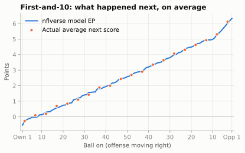
Read the chart from left to right as a drive moves downfield. Pinned at your own 1, the next score is slightly more likely to be the opponent’s: you will probably punt from your end zone and hand them good field position, and a safety is a real risk. By your own 25, for decades the spot after a kickoff touchback (it moved to the 30 in 2024 and the 35 in 2025),4 first-and-10 is worth about 1.1 points. Midfield is worth about 2.6; the opponent’s 20, the edge of the red zone, about 4.5; first-and-goal at the 1, about 6.3. These values come back at the end of the chapter as the anchors for keeping EPA in your head.
ImportantWhy it exists
Yards are not all worth the same. Ten yards from your own 5 to your own 15 mostly buys you room to punt; ten yards from the opponent’s 12 to the 2 nearly turns a field goal into a touchdown. Coaches always knew this (“field position”), but there was no common currency to compare a punt, a third-down conversion and an interception. Expected points provide one: every situation gets a point value, so every play can be scored by how much it changed that value.
From averages to a model
If the average works, why model at all? Because most situations are rare. First-and-10 at your own 25 happened about two thousand times a season while it was the touchback spot; fourth-and-7 at the opponent’s 38 with 1:40 left in the half happens a handful of times a decade. Average a handful of outcomes and you get noise. A model borrows strength from similar situations: it learns how value changes with each extra yard of field position, each extra yard to go and each lost down, then applies that to situations it has seldom seen.
The standard approach, used by the open-source models behind nflverse, predicts the probability of each of the seven next-score outcomes and then takes the weighted average:
\[ \text{EP} = 7\,p_{\text{TD}} + 3\,p_{\text{FG}} + 2\,p_{\text{Safety}} + 0\,p_{\text{None}} - 2\,p_{\text{Opp safety}} - 3\,p_{\text{Opp FG}} - 7\,p_{\text{Opp TD}} \]
The probabilities come from a multinomial logistic regression: a model that turns a list of situation features into seven probabilities that always add up to 1. You do not need a statistics library to fit one. The cell below does it in about thirty lines of NumPy. Four pieces are worth naming before you read it:
- Features. Yard line, down, distance and the last two minutes of a half. Distance goes in on a log scale, because the difference between 1 and 3 yards to go matters more than between 11 and 13. Inside the 10, “distance” is simply the yards to the goal line.
- Knots. A straight line in yard line could not bend near the goal lines. So the features also include “how far past the 5, past the 10, past the 15 …” (
np.clip(y - k, 0, None)for each knotk). Each one lets the slope change at that spot, which turns a straight line into a smooth bent one (a piecewise-linear spline). - Softmax and log loss. For each situation the model computes seven scores, one per outcome, and the softmax turns them into seven probabilities that sum to 1. Fitting means choosing the weights that make the outcomes that really happened as probable as possible. The log loss (the average of −log of the probability given to the true outcome) is the number being pushed down.
- Standardising and Adam. Each feature is rescaled to mean 0 and standard deviation 1 so that no feature dominates just because of its units. Then 250 steps of gradient descent nudge the weights downhill on the log loss. Adam is a common recipe for choosing each step’s size from the recent gradients; any careful step size would get to about the same place.
OUTCOMES = np.array([-7, -3, -2, 0, 2, 3, 7])
NAMES = ["Opp TD", "Opp FG", "Opp safety", "No score", "Safety", "FG", "TD"]
def features(s):
"""Situation -> model features. s needs yardline_100, down, ydstogo
and half_seconds_remaining."""
y = s["yardline_100"].to_numpy() / 100
dn = s["down"].to_numpy()
ytg = np.log(np.clip(s["ydstogo"].to_numpy(), 1, None))
late = (s["half_seconds_remaining"].to_numpy() <= 120).astype(float)
knots = (.05, .1, .15, .2, .3, .4, .5, .6, .75, .9) # let value bend smoothly
cols = [np.ones_like(y), y] + [np.clip(y - k, 0, None) for k in knots]
cols += [(dn == k).astype(float) for k in (2, 3, 4)] # down
cols += [y * (dn == k) for k in (2, 3, 4)] # down x field position
cols += [np.clip(y - .5, 0, None) * (dn == 4)] # 4th down in own half
cols += [ytg] + [ytg * (dn == k) for k in (2, 3, 4)] # distance, by down
cols += [late, late * y] # end of the half
return np.column_stack(cols).astype(np.float32)
def softmax(z):
e = np.exp(z - z.max(axis=1, keepdims=True))
return e / e.sum(axis=1, keepdims=True)
X = features(sit)
Y = (sit.next_score.to_numpy()[:, None] == OUTCOMES).astype(np.float32)
mu, sd = X.mean(0), X.std(0)
mu[0], sd[0] = 0, 1 # leave the intercept alone
Xs = (X - mu) / sd
# Fit by gradient descent on the log loss (Adam step sizes).
W = np.zeros((X.shape[1], len(OUTCOMES)), dtype=np.float32)
m, v = np.zeros_like(W), np.zeros_like(W)
for i in range(1, 251):
g = Xs.T @ (softmax(Xs @ W) - Y) / len(Xs)
m, v = 0.9 * m + 0.1 * g, 0.999 * v + 0.001 * g**2
W -= 0.05 * (m / (1 - 0.9**i)) / (np.sqrt(v / (1 - 0.999**i)) + 1e-8)
def ep_probs(down, ydstogo, yardline_100, late=False):
"""Next-score probabilities for situations (arrays broadcast together)."""
yl = np.atleast_1d(yardline_100).astype(float)
s = pd.DataFrame({"yardline_100": yl, "down": down,
"ydstogo": np.minimum(ydstogo, yl), # goal-to-go inside the 10
"half_seconds_remaining": 60 if late else 900})
return softmax((features(s) - mu) / sd @ W)
def my_ep(down, ydstogo, yardline_100, late=False):
return ep_probs(down, ydstogo, yardline_100, late) @ OUTCOMES
sit["my_ep"] = softmax(Xs @ W) @ OUTCOMES
r_ep = np.corrcoef(sit.my_ep, sit.ep)[0, 1]
print(f"Correlation with nflverse EP: {r_ep:.3f}; "
f"mean absolute gap: {np.abs(sit.my_ep - sit.ep).mean():.2f} points")Correlation with nflverse EP: 0.983; mean absolute gap: 0.25 pointsThirty lines of NumPy land within about a quarter of a point of nflverse’s model on a typical play, with a correlation of 0.98. The real model is better (more on that below), but nothing about expected points is magic. It is a probability model for “who scores next,” fitted to a decade of football.
The probabilities are worth seeing on their own, because they explain the shape of the EP curve.
yl = np.arange(99, 0, -1)
P = ep_probs(1, 10, yl) # 900 seconds left in the half
own25 = dict(zip(NAMES, ep_probs(1, 10, 75)[0]))
none_late = ep_probs(1, 10, 75, late=True)[0][NAMES.index("No score")]
order = [6, 5, 4, 3, 2, 1, 0] # TD at the bottom, Opp TD on top
colors = {6: style.SERIES[0], 5: "#9ec5f4", 4: "#cde2fb", 3: style.GRID,
2: "#fbd3c2", 1: "#f5a27f", 0: style.SERIES[1]}
fig, ax = plt.subplots(figsize=(6.5, 3.6))
ax.stackplot(yl, *[P[:, k] for k in order], colors=[colors[k] for k in order],
labels=[NAMES[k] for k in order], edgecolor=style.SURFACE, linewidth=0.6)
ax.set_xlim(99, 1)
ax.set_ylim(0, 1)
ax.set_xticks([99, 75, 50, 25, 1], ["Own 1", "Own 25", "50", "Opp 25", "Opp 1"])
ax.yaxis.set_major_formatter(plt.FuncFormatter(lambda v, _: f"{v:.0%}"))
ax.set_ylabel("Probability of next score")
ax.set_title("First-and-10: who scores next?")
ax.grid(False)
h, lab = ax.get_legend_handles_labels()
ax.legend(h[::-1], lab[::-1], loc="center left", bbox_to_anchor=(1.01, 0.5), fontsize=8)
plt.show()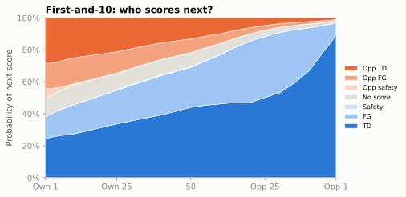
Two things jump out. First, at your own 25 the offense is more likely than the opponent to score next, but not by much: its touchdown and field goal together come to 55%, against 35% for the opponent’s. That narrow edge is why first-and-10 there is worth only about a point. Second, with a full quarter left, “no score” is a thin band (10% at your own 25): halves are long enough that somebody almost always scores. The chart is drawn at one clock value; the model’s end-of-half feature changes the picture. With under two minutes left, “no score” at the same spot jumps to 63%, which is why a long gain as the half runs out can be worth surprisingly little.
Now the curve itself: EP by yard line, one line per down.
fig, ax = plt.subplots(figsize=(6.5, 3.8))
for k, dn in enumerate([1, 2, 3, 4]):
ep = my_ep(dn, 10, yl)
ax.plot(yl, ep, color=style.SERIES[k], lw=2, label=f"{dn}{['st','nd','rd','th'][k]} & 10")
ax.axhline(0, color=style.BASELINE, lw=1)
ax.set_xlim(100, 0)
ax.set_xticks([99, 75, 50, 25, 1], ["Own 1", "Own 25", "50", "Opp 25", "Opp 1"])
ax.set_ylabel("Expected points")
ax.set_title("Each down you use up costs points")
ax.legend(loc="upper left")
plt.show()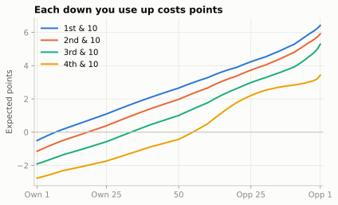
The rules of thumb you will use in your head come straight from the model. One cell computes them all at midfield:
slope = (my_ep(1, 10, 30)[0] - my_ep(1, 10, 70)[0]) / 40 # per yard, between the 20s
cost = {f"{a}->{a + 1}": my_ep(a, 10, 50)[0] - my_ep(a + 1, 10, 50)[0] for a in (1, 2, 3)}
per_ytg = (my_ep(2, 6, 50)[0] - my_ep(2, 10, 50)[0]) / 4 # 2nd & 10 -> 2nd & 6
four_yd_run = my_ep(2, 6, 46)[0] - my_ep(1, 10, 50)[0] # 1st & 10 at 50, gain 4
five_yd_run = my_ep(2, 5, 45)[0] - my_ep(1, 10, 50)[0] # ... gain 5
print(f"one yard of field position: {slope:+.3f}")
print("one lost down, 10 to go:", ", ".join(f"{k} {v:.2f}" for k, v in cost.items()))
print(f"one yard less to go (2nd down, 6-10 to go): {per_ytg:+.3f}")
print(f"gain on 1st & 10 at midfield: 4 yards EPA {four_yd_run:+.2f}, 5 yards {five_yd_run:+.2f}")one yard of field position: +0.061
one lost down, 10 to go: 1->2 0.68, 2->3 0.97, 3->4 1.43
one yard less to go (2nd down, 6-10 to go): +0.069
gain on 1st & 10 at midfield: 4 yards EPA -0.12, 5 yards +0.04Four habits of the curve are worth memorising:
- Between the 20s, each yard of field position is worth about 0.06 points on first-and-10. Forty yards is worth about 2.5 points: most of a field goal.
- A lost down costs more the later it is. At midfield on 10 to go, first to second down costs about 0.7, second to third about 1.0, and third to fourth about 1.4. An incomplete pass on first down does not “cost nothing”; it moves you from the first-down line to the second-down line.
- Each yard closer to the line to gain is also worth something: about 0.07 points per yard of distance on second down, on top of the field-position value. A gain moves the ball and shortens the distance, so it earns both. That is why a 4-yard run on first-and-10 at midfield nets only about -0.12 despite costing a down worth 0.68: 4 yards of field position plus 4 yards less to go pay for most of it, and a 5-yard gain (+0.04) about breaks even.
- The curve bends at both ends. Near your own goal line the risk of a safety and of a short field for the opponent drags value down. Near the opponent’s goal line the jump from a likely field goal to a likely touchdown makes each yard worth more.
CautionCommon misconception
“The fourth-down line shows what fourth down is worth.” It shows what fourth down has been worth given what coaches usually did: the model learned from history, when most fourth downs ended in a punt or a field goal, and teams have gone for it more since about 2018 (in nflverse data, on about 13% of fourth downs in 2016 and 23% in 2025). So the fourth-down curve bakes in the league’s usual decision. Whether that decision was right is a win-probability question, answered in Win Probability and Decision Analysis.
What the real model adds
The nflverse model was built by Ben Baldwin and Sebastian Carl for the nflfastR project in 2020.5 It uses the same seven outcomes but a more flexible learner (gradient-boosted trees, XGBoost) and more inputs: seconds left in the half, each team’s timeouts, whether the offense is at home, roof type, and an “era” variable so that the 2000s and the 2020s can differ. It also down-weights plays from lopsided games and plays that are several drives away from the next score, so that the fit leans on the plays most connected to the outcome.
Do the 2024 and 2025 kickoff changes break the model? Mostly not. EP stops counting at the next score, so the kickoff that follows a score is outside it. The new touchback spots change where drives start (far more of them now begin at the 35), not what first-and-10 at the 35 is worth.
The other thing to know before using nflverse EPA: it is credited to plays, not people. For a completion, nflverse splits the EPA into air_epa (the value up to the catch point) and yac_epa (the value added after the catch). That split is the usual first step in asking whether a 60-yard catch-and-run belonged to the quarterback or the receiver.
Just as important is what EP leaves out:
- The score. EP asks who scores next, not who wins. A field goal when trailing by 4 with two minutes left is worth the same 3 points as one in the first quarter. Win probability, the score-aware cousin, is the subject of Win Probability and Decision Analysis.
- Who is playing. The Chiefs at their own 25 are worth more than an expansion team at its own 25, but EP gives them the same value.
- The play call. EP knows the situation before the snap, not the personnel, formation or coverage.
NoteGo deeper
Before nflfastR, the reference open model was nflscrapR (2017-2019), by Maksim Horowitz, Ron Yurko and Sam Ventura at Carnegie Mellon. Their paper fitted exactly the kind of multinomial logistic regression above, then used it to build a wins-above-replacement measure for players (how many wins a player adds compared with a cheap backup who could replace him).6 Reading it after this section is a good exercise: you will recognise every step.
Where expected points came from
The first expected-points table was built by a working NFL quarterback. In 1971 Virgil Carter, then with the Cincinnati Bengals, and Robert Machol, an operations-research professor at Northwestern, published “Operations Research on Football” in the journal Operations Research.7 Carter asked every team’s public-relations office for its play-by-play sheets from the first half of the 1969 season, coded 8,373 plays from 56 games, and averaged the next score after a first-and-10 from each 10-yard strip of the field: exactly the first chart in this chapter, done before personal computers. Carter had earned a master’s degree at Northwestern while playing for the Bears, and he thought about football the way an engineer would: as a problem with measurable states. He is also remembered as the quarterback of Bill Walsh’s early short-passing offense in Cincinnati, the system that later became known as the West Coast offense.
In 1988 Bob Carroll, Pete Palmer and John Thorn’s The Hidden Game of Football made the idea popular with a simple straight line: a first down at your own goal line is worth −2 points, at the opponent’s goal line +6, and every yard in between is worth the same 0.08 points (so your own 25 is worth zero).8 The line was crude, but it gave fans a currency for field position.
The modern version arrived with the internet. Brian Burke, a former Navy F/A-18 pilot, built expected-points and win-probability models on his Advanced NFL Stats site from 2007 and helped popularise EPA before joining ESPN’s analytics group in 2015.9 Then came the open-source turn: nflscrapR (2017) put a full EP model and every play since 2009 into R, and nflfastR (2020) rebuilt it to be faster and more accurate. Today the same numbers flow into Python through nflverse, which is why you can reproduce every chart here.
CautionCommon misconception
“EPA is a single official number.” It is not. ESPN, Next Gen Stats, PFF and nflverse each run their own expected-points models, and their EPA for the same play can differ by a few tenths of a point. The ideas are the same; the fitted numbers are not. When you compare EPA from two sources, check that it is the same model, and in this book it is always nflverse’s.
One play’s EPA, worked by hand
EPA is one subtraction:
\[ \text{EPA} = \text{EP}_{\text{after}} - \text{EP}_{\text{before}} \]
Two rules handle the special cases. If the play scores, EP after is the points scored. For a touchdown nflverse uses 7, not 6: an extra point is made almost every time, so the model books the touchdown at its usual final value. The extra-point play then gets its own small EPA (a made kick is worth a few hundredths more than the 1 point already assumed; a miss costs about a point). If the ball changes hands, EP after is the negative of the new offense’s EP, because their gain is your loss. The three Super Bowl LX plays from the opening of this chapter cover all three cases.
lx = raw[raw.game_id == "2025_22_SEA_NE"].sort_values("play_id")
picked = lx[lx.play_id.isin([2858, 3166, 3910])]
md_table(picked.assign(
situation=lambda t: t.down.astype(int).astype(str) + " & " + t.ydstogo.astype(int).astype(str),
ep_before=lambda t: t.ep, ep_after=lambda t: t.ep + t.epa)
[["qtr", "posteam", "situation", "yardline_100", "yards_gained",
"ep_before", "ep_after", "epa"]])| qtr | posteam | situation | yardline_100 | yards_gained | ep_before | ep_after | epa |
|---|---|---|---|---|---|---|---|
| 3 | SEA | 3 & 12 | 81 | 8 | -1.59 | -1.70 | -0.11 |
| 4 | SEA | 1 & 10 | 16 | 16 | 4.64 | 7.00 | 2.36 |
| 4 | NE | 1 & 10 | 44 | 0 | 2.81 | -7.00 | -9.81 |
from matplotlib.patches import FancyArrowPatch, Circle
from gridiron import Field
CASES = [
dict(title="SEA 3rd & 12 at own 19: Darnold to Kupp, 8 yards",
los=29, togo=12, end=37, color=style.OFFENSE_DARK,
before="EP before: −1.59\n(3rd & 12, own 19)",
after="EP after: −1.70\n(4th & 4, own 27)",
sum="EPA = −1.70 − (−1.59) = −0.11"),
dict(title="SEA 1st & 10 at NE 16: Darnold to Barner, 16-yard touchdown",
los=94, togo=10, end=110, color=style.OFFENSE_DARK,
before="EP before: +4.64\n(1st & 10, opp 16)",
after="After: touchdown = +7",
sum="EPA = 7 − 4.64 = +2.36"),
dict(title="NE 1st & 10 at SEA 44: Maye intercepted by Nwosu, returned 45 yards for a TD",
los=66, togo=10, end=55, color=style.DEFENSE_DARK, ret=10,
before="EP before: +2.81\n(1st & 10, opp 44)",
after="After: SEA touchdown = −7\nfor New England",
sum="EPA = −7 − 2.81 = −9.81"),
]
fig, axes = plt.subplots(3, 1, figsize=(6.5, 7.6))
for ax, c in zip(axes, CASES):
Field(ax=ax, orient="horizontal", los=c["los"], window=(-c["los"], 120 - c["los"]),
to_go=c["togo"], lateral=(9.5, 43.8))
yb = 26.7 # ball on the middle of the field
ax.add_patch(Circle((c["los"], yb), 1.3, color=style.BALL, zorder=6))
if "ret" in c: # pass picked off 11 yards BEHIND the line, then returned the other way
ax.add_patch(FancyArrowPatch((c["los"], yb), (c["end"], yb - 4), arrowstyle="-|>",
mutation_scale=10, color=style.OFFENSE, lw=1.4, ls=(0, (2, 2)), zorder=5))
ax.add_patch(FancyArrowPatch((c["end"], yb - 4), (c["ret"] - 4, yb - 4),
arrowstyle="-|>", mutation_scale=12, color=c["color"], lw=2.6, zorder=5))
ax.text(c["end"] - 1.5, yb - 3.2, "picked off at NE 45,\n11 yds behind the line",
ha="right", va="bottom", fontsize=7, color=style.INK_2, zorder=8)
else:
ax.add_patch(FancyArrowPatch((c["los"], yb), (c["end"], yb), arrowstyle="-|>",
mutation_scale=12, color=c["color"], lw=2.6, zorder=5))
box = dict(boxstyle="round,pad=0.3", fc=style.SURFACE, ec=style.BASELINE, lw=0.6)
ax.text(c["los"], 33.5, c["before"], ha="center", va="bottom", fontsize=7.5,
color=style.INK, bbox=box, zorder=8)
# the "after" box sits at the spot where the play ended, between the yard numbers
ax_x, ax_y = (c["end"], 23.0) if "ret" not in c else (30, 19.0)
ax.text(ax_x, ax_y, c["after"], ha="center",
va="top", fontsize=7.5, color=style.INK, bbox=box, zorder=8)
ax.set_title(c["title"], loc="left", fontsize=9, fontweight="bold", color=style.INK)
ax.text(0.99, 0.04, c["sum"], transform=ax.transAxes, ha="right", va="bottom",
fontsize=9, fontweight="bold", color=style.INK, zorder=9,
bbox=dict(boxstyle="round,pad=0.3", fc=style.SURFACE, ec=style.INK_2, lw=0.8))
fig.tight_layout(h_pad=1.6)
plt.show()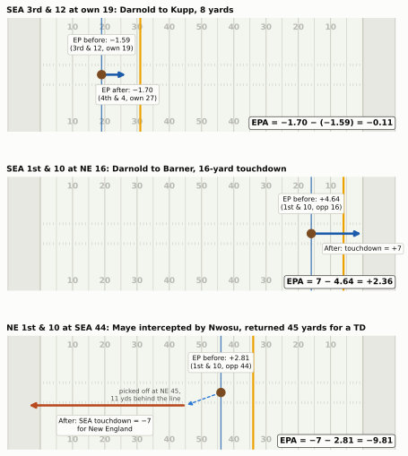
Walk through the first one yourself, the way you will on Sunday. Before the snap Seattle has third-and-12 at its own 19. That is a bad situation: most of the time the offense punts, and the model says it is worth about −1.6 points (the opponent is slightly more likely to score next). The 8-yard catch leaves fourth-and-4 at the 27. The ball is 8 yards further on, but Seattle has also burned its last useful down; it will punt, and fourth-and-4 at the 27 is worth about −1.7. The difference, −0.11, is the completion’s EPA. That does not mean an incompletion would have been better: fourth-and-12 at the 19 is worse still, and the extra 8 yards improved the punt. But the completion did not improve on the situation Seattle was already in, and that is what EPA grades against. The question EPA asks is never “did you gain yards?” but “are you better off than before the snap?”
The third play shows why turnovers dominate EPA. New England had first-and-10 in Seattle territory, a situation worth +2.81. One throw later Seattle had 7 points. The swing is the sum of the two: everything New England was about to earn plus everything Seattle scored.
An interception without a touchdown return works the same way, and you can price it with the chapter’s own model. Say a team with first-and-10 at midfield throws a pick and the return leaves the opponent first-and-10 at its own 45:
before_int = my_ep(1, 10, 50)[0] # your first-and-10 at midfield
opp_after = my_ep(1, 10, 55)[0] # their first-and-10 at their own 45
print(f"EP before {before_int:+.2f}; EP after = -({opp_after:.2f}); "
f"EPA = {-opp_after - before_int:+.2f}")EP before +2.65; EP after = -(2.37); EPA = -5.02You lose the value you had and hand the opponent a good starting spot. In the real data, non-touchdown interceptions thrown from around midfield cost about three and a half to four points on average, and no other common play moves the ledger as much.
EPA also has a blind spot that these plays expose. When Nwosu scored, nflverse’s win probability gave New England 3% before the snap; at the Kupp catch, Seattle was already at 89%. EPA says the interception was the costliest play of the night; win probability says the game was already decided. EP ignores the score by design, and that is the gap Win Probability and Decision Analysis fills.
Why EPA beats yards
Yards per play is the stat broadcasts reach for first, and it is not useless. But it treats a yard as a yard. The cell below collects plays that gained exactly 8 yards in four different situations, 2016-2025.
p8 = plays[plays.yards_gained == 8]
cases = {
"1st & 10, own 20-30 (leaves 2nd & 2)":
(p8.down == 1) & (p8.ydstogo == 10) & p8.yardline_100.between(70, 80),
"3rd & 10-12 (short of the sticks)":
(p8.down == 3) & p8.ydstogo.between(10, 12) & (p8.yardline_100 > 20),
"3rd & 5-7 (moves the chains)":
(p8.down == 3) & p8.ydstogo.between(5, 7) & (p8.yardline_100 > 20),
"Any down, ball on the 8 (touchdown)": p8.yardline_100 == 8,
}
md_table(pd.DataFrame([{"8-yard gain on": k, "plays": int(m.sum()),
"average EPA": p8.loc[m, "epa"].mean()} for k, m in cases.items()]))| 8-yard gain on | plays | average EPA |
|---|---|---|
| 1st & 10, own 20-30 (leaves 2nd & 2) | 1,183 | 0.46 |
| 3rd & 10-12 (short of the sticks) | 287 | -0.32 |
| 3rd & 5-7 (moves the chains) | 508 | 1.46 |
| Any down, ball on the 8 (touchdown) | 405 | 2.25 |
The same 8 yards range from a loss of value to more than a point and a half. That is the first reason EPA beats yards: context. The second is completeness. Yards cannot price a turnover (an interception gains “0 yards”), barely register a sack, and ignore whether a gain came on first-and-10 or third-and-20. EPA prices all of them in the same unit, points.
The third reason is that EPA lines up with the scoreboard. Over all regular-season games from 2016 to 2025, here is how well each per-game offensive stat tracks the points that team scored in the same game, and how well the first nine weeks of a season predict points per game over the rest of it.
scores = reg.drop_duplicates("game_id")[["game_id", "season", "week", "home_team",
"away_team", "home_score", "away_score"]]
keep = ["game_id", "season", "week", "team", "pf"] # one row per team per game
pts = pd.concat([
scores.rename(columns={"home_team": "team", "home_score": "pf"})[keep],
scores.rename(columns={"away_team": "team", "away_score": "pf"})[keep]])
game = (plays.groupby(["game_id", "posteam"])
.agg(epa_play=("epa", "mean"), yds_play=("yards_gained", "mean"),
success=("success", "mean"))
.reset_index().rename(columns={"posteam": "team"})
.merge(pts, on=["game_id", "team"]))
same_game = game[["epa_play", "yds_play", "success"]].corrwith(game.pf)
early = game[game.week <= 9].groupby(["season", "team"])[
["epa_play", "yds_play", "success", "pf"]].mean()
late = game[game.week >= 10].groupby(["season", "team"]).pf.mean()
predict = early.corrwith(late.reindex(early.index))
md_table(pd.DataFrame({
"stat (offense)": ["EPA per play", "Yards per play", "Success rate", "Points per game"],
"same-game r with points": [same_game.epa_play, same_game.yds_play, same_game.success, 1.0],
"weeks 1-9 r with later points": [predict.epa_play, predict.yds_play, predict.success,
predict.pf]}))| stat (offense) | same-game r with points | weeks 1-9 r with later points |
|---|---|---|
| EPA per play | 0.78 | 0.49 |
| Yards per play | 0.65 | 0.45 |
| Success rate | 0.56 | 0.44 |
| Points per game | 1.00 | 0.47 |
Two honest conclusions. Descriptively, EPA per play explains a game’s points much better than yards per play (a correlation near 0.78 against 0.65). Predictively, the edge is real but small: half a season of EPA per play predicts the second half’s scoring a little better than yards per play and about as well as points themselves. EPA is not a crystal ball. Its value is that it says why a team scored, play by play, in a unit that adds up.
Success rate: the consistency half of the picture
The primer defined success as a play with positive EPA, which is the nflverse success column. You will also meet an older, yardage-based definition that goes back to The Hidden Game of Football and was popularised by Football Outsiders: a play is successful if it gains 40% of the needed yards on first down, 60% on second down, and all of them on third or fourth down. (Football Outsiders also used a 45% first-down threshold for some measures, so check which version a source means.)10 The two agree on most plays, and the rules of thumb above say why: a 4-yard gain on first-and-10 buys 4 yards of field position and 4 yards less to go, which together pay for most of the down (the midfield example came out at -0.12, and 5 yards about breaks even). So “gain 40% on first down” is close to “don’t lose expected points,” set a little generously.
need = np.select([plays.down == 1, plays.down == 2], [0.4, 0.6], 1.0) * plays.ydstogo
old_success = plays.yards_gained >= need
agree = (old_success == (plays.success == 1)).mean()
print(f"The two definitions agree on {agree:.0%} of plays")The two definitions agree on 92% of playsMost of the disagreements are on first down: gains of 4 or 5 yards that pass the 40% test but come out slightly negative in EPA, because the 40% line sits a little below EP’s break-even. Most of the rest go the other way, on second and third down: gains that fall short of the yardage target but still improve the situation, often by moving a team into field-goal range. Turnovers are only a small share.
You will rarely hear a coach say “success rate.” The sideline words are staying on schedule (the idea from Early Downs and Field Zones), winning first down and efficiency. The 40/60/100 rule is a way of turning “on schedule” into a number: 4 of 10 yards on first down leaves a manageable second down.
Why keep a second efficiency number at all, when EPA per play already exists? Because they summarise different shapes. EPA per play is a mean, and football outcomes are lumpy: a few huge gains and a few turnovers move a team’s average more than dozens of ordinary snaps. Success rate is a frequency: how often did the offense stay on schedule? It ignores how big a success was (a 4-yard gain on first-and-10 and a 70-yard touchdown both count as one). That makes it less sensitive to a few freak plays, but it also throws away the size of each play, and size is what produces points. The table above already showed the cost: of the four stats, success rate was the weakest guide to a team’s later scoring. The stability section below shows the benefit, and how small it is.
That lumpiness has a name you will hear on every broadcast. Explosive play rate is the share of plays that gain a big chunk, and the definition depends on who is counting. Coaching staffs often chart runs of 12+ yards and passes of 16+; that is how the Raiders under Dennis Allen (2012) and the Cowboys under offensive coordinator Scott Linehan (2016) described it.11 Analysts more often use 10+ and 20+, roughly the top tenth of runs and of passes, and other cut-offs circulate too.12 This chapter uses 10+/20+; the cell computes both.
p25 = plays[plays.season == 2025].copy()
for name, run_cut, pass_cut in [("10+/20+", 10, 20), ("12+/16+", 12, 16)]:
big = np.where(p25.kind == "Designed run", p25.yards_gained >= run_cut,
p25.yards_gained >= pass_cut)
share = p25.loc[big, "epa"].sum() / p25.loc[p25.epa > 0, "epa"].sum()
print(f"2025, {name}: {big.mean():.1%} of plays were explosive; "
f"they produced {share:.0%} of all positive EPA")
p25["explosive"] = np.where(p25.kind == "Designed run", p25.yards_gained >= 10,
p25.yards_gained >= 20)2025, 10+/20+: 8.9% of plays were explosive; they produced 37% of all positive EPA
2025, 12+/16+: 10.5% of plays were explosive; they produced 44% of all positive EPAOn either definition, about one play in ten produces well over a third of all the value offenses create. That is why explosive plays decide games, and also why a team’s EPA per play can swing on two or three of them. Treat explosive play rate as a measure of what happened more than of what will happen: as the stability chart below shows, it repeats from year to year less well than plain efficiency.
Run versus pass, honestly
Every season the same chart circulates: dropbacks average positive EPA, designed runs average negative EPA, therefore teams should pass more. The first half of that is true.
fig, ax = plt.subplots(figsize=(6.5, 3.5))
edges = np.arange(-4, 4.01, 0.2)
for k, kind in enumerate(["Dropback", "Designed run"]):
raw_e = p25.loc[p25.kind == kind, "epa"]
e = raw_e.clip(-4, 3.999)
ax.hist(e, bins=edges, weights=np.full(len(e), 1 / len(e)), histtype="step", lw=2,
color=style.SERIES[k],
label=f"{kind}s: mean {raw_e.mean():+.2f}, median {raw_e.median():+.2f}, "
f"success {p25.loc[p25.kind == kind, 'success'].mean():.0%}")
ax.axvline(0, color=style.BASELINE, lw=1)
ax.yaxis.set_major_formatter(plt.FuncFormatter(lambda v, _: f"{v:.0%}"))
ax.set_xlabel("EPA on the play (plays beyond ±4 piled into the end bins)")
ax.set_ylabel("Share of plays in each bin")
ax.set_title("Dropbacks win on average; the typical play is a small loss either way")
ax.legend(loc="upper center", bbox_to_anchor=(0.5, -0.2), fontsize=8)
plt.show()
lg_mean, lg_median = p25.epa.mean(), p25.epa.median()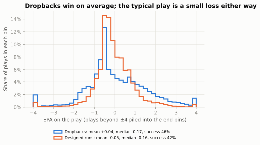
Why are both medians negative? Because EPA is lopsided. Across all 2025 scrimmage plays, the average EPA is close to zero (+0.01), as it should be for a model built to describe the average outcome. But the median play is -0.17: most snaps are incompletions, short gains and stuffs that each lose a little, and a smaller number of long gains and touchdowns win a lot and pay for them. So “the typical play” loses value for both runs and dropbacks. What separates the two piles is the right tail: dropbacks produce more of the big wins.
The second half, “therefore pass more,” needs care, because the two piles of plays were not run in the same situations. Statisticians call this a selection effect: the plays were selected into each group for reasons that also affect their results. Four of them matter here.
- What counts as a pass. The dropback pile includes sacks (about −1.7 EPA each in 2025) and scrambles (about +0.5), while the run pile includes designed quarterback runs, some of the best runs in football. It also includes plays a coach would not file where the data does. Screens are thrown, so they count as dropbacks, yet coaches treat them as long handoffs, an extension of the run game. On an RPO (run-pass option) the label is whatever the quarterback decided after the snap, so the run and pass piles are not clean play calls. And play-action passes are dropbacks that borrow their value from the run game’s look. Know what is in each pile before you compare them.
- Down and distance. Teams run most on short yardage, where runs succeed often, and pass most on third-and-long, where everything is hard. Both of those flatter runs. Two smaller effects push the other way: the few runs on third-and-long are often “give-up” draws that make runs look worse, and passes on second-and-short lean heavily on play-action against defenses loaded for the run, which makes passes look better.
- Score and clock. Leading teams run to shorten the game, often into defenses that know it. Trailing teams pass into soft coverage that concedes underneath yards. The garbage-time filter removes the worst of this.
- The defense’s choice. Offenses run more against light boxes and pass more against loaded ones; the defense has already guessed. Neither average is “the value of a run” in a vacuum.
The fairest simple comparison holds the situation fixed. The next chart compares runs and dropbacks within the same down-and-distance buckets, using neutral game states from the last five seasons.
q = neutral[neutral.season.between(2021, 2025)].copy()
q["situation"] = np.select(
[(q.down == 1) & (q.ydstogo == 10), (q.down == 2) & (q.ydstogo >= 7),
(q.down == 3) & (q.ydstogo >= 7), (q.down >= 2) & (q.ydstogo <= 2)],
["1st & 10", "2nd & 7+", "3rd & 7+", "2nd-4th & 1-2"], "other")
q = q[q.situation != "other"]
tab = (q.groupby(["situation", "kind"]).agg(epa=("epa", "mean"), sr=("success", "mean"))
.unstack("kind"))
run_share = q.groupby("situation").kind.apply(lambda s: (s == "Designed run").mean())
order = ["1st & 10", "2nd & 7+", "3rd & 7+", "2nd-4th & 1-2"]
fig, axes = plt.subplots(1, 2, figsize=(6.5, 3.0), sharey=True)
for ax, (metric, label) in zip(axes, [("epa", "EPA per play"), ("sr", "Success rate")]):
for k, kind in enumerate(["Dropback", "Designed run"]):
ax.scatter(tab.loc[order, (metric, kind)], range(len(order)), s=60,
color=style.SERIES[k], edgecolor=style.SURFACE, zorder=3, label=kind)
for i, s in enumerate(order):
ax.plot(tab.loc[s, metric][["Dropback", "Designed run"]], [i, i],
color=style.BASELINE, lw=1.5, zorder=2)
ax.set_xlabel(label)
if metric == "epa":
ax.axvline(0, color=style.BASELINE, lw=1)
else:
ax.xaxis.set_major_formatter(plt.FuncFormatter(lambda v, _: f"{v:.0%}"))
axes[0].set_yticks(range(len(order)),
[f"{s} ({run_share[s]:.0%} run)" for s in order])
axes[0].invert_yaxis()
h, lab = axes[0].get_legend_handles_labels()
fig.legend(h, lab, loc="upper right", ncol=2, fontsize=8, bbox_to_anchor=(0.99, 1.0))
fig.suptitle("Same situation, run vs. dropback", x=0.01, ha="left",
fontweight="bold", fontsize=11)
fig.tight_layout()
plt.show()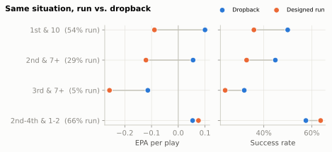
Holding the situation fixed, the passing edge survives on early downs: on first-and-10 a dropback has been worth roughly two-tenths of a point more than a run. On third-and-long it survives too, though the give-up draws in that bucket exaggerate it. In short yardage the gap closes: runs and dropbacks earn about the same EPA, and runs succeed more often.
Part of that short-yardage edge is one play. The run pile includes the quarterback sneak (and its pushed cousin, the tush push), which converts far more often than a handoff. FTN’s charting flags sneaks from 2022 on (is_qb_sneak), so the cell splits them out:
ftn_sn = nfl().load_ftn_charting(list(range(2022, 2026))).to_pandas()
sy = (neutral[neutral.season.between(2022, 2025) & (neutral.down >= 2) & (neutral.ydstogo <= 2)]
.merge(ftn_sn[["nflverse_game_id", "nflverse_play_id", "is_qb_sneak"]], how="left",
left_on=["game_id", "play_id"], right_on=["nflverse_game_id", "nflverse_play_id"]))
sneak = sy.is_qb_sneak.fillna(False).astype(bool)
sy["group"] = np.where(sy.kind == "Dropback", "Dropback",
np.where(sneak, "QB sneak", "Other designed run"))
sneak_tab = sy.groupby("group").agg(plays=("epa", "size"), epa=("epa", "mean"),
success=("success", "mean"),
first_down=("first_down", "mean"))
md_table(sneak_tab.reset_index())| group | plays | epa | success | first_down |
|---|---|---|---|---|
| Dropback | 2,787 | 0.04 | 0.57 | 0.58 |
| Other designed run | 4,752 | 0.02 | 0.61 | 0.68 |
| QB sneak | 742 | 0.37 | 0.78 | 0.82 |
Sneaks are only about one short-yardage run in seven, but they earn several times the EPA of other runs and convert most of the time. Take them out and the other runs earn about what dropbacks do, or a shade less, while still succeeding more often. That is the honest version of the argument. Passing is more valuable on average in most situations, and the league has moved that way for twenty years, but the right mix depends on the situation, the personnel and what the defense is daring you to do.
CautionCommon misconception
“You have to run the ball to make play-action work.” Analysts testing this with play-by-play data, notably Ben Baldwin, found that play-action’s extra efficiency does not depend on how often or how well a team has been running.13 The coaching point behind that finding is that the fake has to look like your real run game: the same offensive-line footwork and the same backfield action. Linebackers are taught to read that action on every snap, and they react to it whatever the season’s yards per carry say. Play-Action, Bootlegs, and Screens covers the mechanics.
Team offense versus team defense
Put every team’s offensive and defensive EPA per play on one chart and the season’s shape appears.
team = (neutral.groupby(["season", "posteam"])
.agg(off_epa=("epa", "mean"), off_sr=("success", "mean"), plays=("epa", "size"))
.join(neutral.groupby(["season", "defteam"])
.agg(def_epa=("epa", "mean"), def_sr=("success", "mean"))
.rename_axis(["season", "posteam"]))
.reset_index().rename(columns={"posteam": "team"}))
team["net"] = team.off_epa - team.def_epadef label_points(ax, x, y, labels, fs=7.5):
"""Write each label right of its point, nudging it until it clears labels and markers."""
ax.figure.canvas.draw()
T, k = ax.transData, ax.figure.dpi / 72
pts = T.transform(np.column_stack([x, y]))
w, h = np.array([len(s) for s in labels]) * fs * 0.62 * k, fs * 1.15 * k
placed = [(px - 4 * k, py, 8 * k) for px, py in pts] # markers count as obstacles
for i in np.argsort(pts[:, 1]): # bottom to top
lx, ly = pts[i, 0] + 5 * k, pts[i, 1]
while any(abs(ly - py) < h and lx < px + pw and px < lx + w[i] for px, py, pw in placed):
ly += h / 4
placed.append((lx, ly, w[i]))
tx, ty = T.inverted().transform((lx, ly))
ax.text(tx, ty, labels[i], fontsize=fs, color=style.INK_2, va="center", zorder=5)
if ly - pts[i, 1] > h * 0.8: # leader line if the label moved far
ax.plot([x[i], tx], [y[i], ty], color=style.BASELINE, lw=0.6, zorder=2)t25 = team[team.season == 2025]
fig, ax = plt.subplots(figsize=(6.5, 5.2))
ax.axvline(t25.off_epa.mean(), color=style.BASELINE, lw=1)
ax.axhline(t25.def_epa.mean(), color=style.BASELINE, lw=1)
hi = t25.team.isin(["SEA", "NE"])
ax.scatter(t25.off_epa[~hi], t25.def_epa[~hi], s=34, color=style.SERIES[0],
edgecolor=style.SURFACE, linewidth=1, zorder=3)
ax.scatter(t25.off_epa[hi], t25.def_epa[hi], s=48, color=style.SERIES[1],
edgecolor=style.SURFACE, linewidth=1, zorder=4)
ax.invert_yaxis()
ax.set_xlabel("Offense: EPA per play gained →")
ax.set_ylabel("Defense: EPA per play allowed (better ↑)")
ax.set_title("2025: who was good at what")
for txt, xy, ha in [("Good offense,\ngood defense", (0.98, 0.97), "right"),
("Bad offense,\nbad defense", (0.02, 0.03), "left")]:
ax.text(*xy, txt, transform=ax.transAxes, ha=ha, va="top" if xy[1] > .5 else "bottom",
fontsize=8, color=style.MUTED, style="italic")
label_points(ax, t25.off_epa.to_numpy(), t25.def_epa.to_numpy(),
[{"LA": "LA (Rams)"}.get(t, t) for t in t25.team])
plt.show()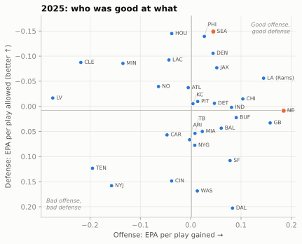
The quadrants read like a season summary. Top-right teams were good at both. The Rams, Seahawks and Patriots finished first, second and third in net EPA per play (offensive EPA per play minus defensive EPA per play allowed), but by different routes: the Rams were above average on both sides, Seattle got there mostly on defense, and New England almost entirely on offense, with a defense right at the league average. Bottom-left teams were bad at both. The off-diagonal corners are the interesting ones: a team far right but low (good offense, bad defense) plays shootouts; a team high but far left wins ugly. Here is the top and bottom of the same ranking for 2024 and 2025. In the table, off_epa and def_epa are EPA per play gained and allowed, net is their difference, and off_sr and def_sr are the success rates gained and allowed (for defenses, lower is better).
def top_bottom(season, n=5):
t = team[team.season == season].sort_values("net", ascending=False)
t["rank"] = t.net.rank(ascending=False).astype(int) # rank among all 32 first
t = pd.concat([t.head(n), t.tail(n)])
return t[["season", "rank", "team", "off_epa", "def_epa", "net", "off_sr", "def_sr"]]
md_table(pd.concat([top_bottom(2024), top_bottom(2025)]), digits=3)| season | rank | team | off_epa | def_epa | net | off_sr | def_sr |
|---|---|---|---|---|---|---|---|
| 2024 | 1 | BAL | 0.200 | -0.046 | 0.246 | 0.493 | 0.412 |
| 2024 | 2 | MIN | 0.092 | -0.144 | 0.236 | 0.478 | 0.405 |
| 2024 | 3 | BUF | 0.192 | -0.027 | 0.219 | 0.496 | 0.442 |
| 2024 | 4 | PHI | 0.082 | -0.113 | 0.196 | 0.446 | 0.387 |
| 2024 | 5 | DET | 0.166 | -0.013 | 0.179 | 0.513 | 0.423 |
| 2024 | 28 | NYG | -0.128 | 0.063 | -0.192 | 0.401 | 0.452 |
| 2024 | 29 | LV | -0.152 | 0.042 | -0.195 | 0.388 | 0.440 |
| 2024 | 30 | NE | -0.087 | 0.109 | -0.196 | 0.425 | 0.490 |
| 2024 | 31 | CAR | -0.023 | 0.178 | -0.201 | 0.414 | 0.521 |
| 2024 | 32 | CLE | -0.172 | 0.063 | -0.235 | 0.360 | 0.434 |
| 2025 | 1 | LA | 0.145 | -0.056 | 0.201 | 0.521 | 0.411 |
| 2025 | 2 | SEA | 0.045 | -0.149 | 0.194 | 0.471 | 0.397 |
| 2025 | 3 | NE | 0.185 | 0.009 | 0.176 | 0.501 | 0.471 |
| 2025 | 4 | PHI | 0.027 | -0.139 | 0.166 | 0.435 | 0.410 |
| 2025 | 5 | DEN | 0.044 | -0.106 | 0.150 | 0.439 | 0.370 |
| 2025 | 28 | WAS | 0.013 | 0.169 | -0.155 | 0.445 | 0.495 |
| 2025 | 29 | CIN | -0.038 | 0.149 | -0.187 | 0.451 | 0.492 |
| 2025 | 30 | LV | -0.274 | -0.017 | -0.257 | 0.362 | 0.438 |
| 2025 | 31 | NYJ | -0.157 | 0.158 | -0.315 | 0.400 | 0.458 |
| 2025 | 32 | TEN | -0.195 | 0.123 | -0.318 | 0.364 | 0.465 |
NoteFilm room: Seattle Seahawks 2025
Seattle’s 2025 defense (head coach Mike Macdonald, defensive coordinator Aden Durde) allowed the fewest EPA per play in the league in neutral situations, and the Super Bowl is a good game to run through the ledger.14 First, the offensive scrimmage plays for each team:
lx_s = lx[lx.play_type.isin(["pass", "run"]) & lx.epa.notna()]
md_table(lx_s.groupby("posteam").agg(plays=("epa", "size"), total_epa=("epa", "sum"),
epa_play=("epa", "mean"), success=("success", "mean"))
.reset_index())| posteam | plays | total_epa | epa_play | success |
|---|---|---|---|---|
| NE | 67 | -20.73 | -0.31 | 0.40 |
| SEA | 71 | -3.52 | -0.05 | 0.34 |
That looks wrong at first: the team that won 29-13 has negative offensive EPA and a lower success rate. The ledger explains itself once you remember what it counts. Seattle’s points came from five Jason Myers field goals (a Super Bowl record), one offensive touchdown and Nwosu’s interception return. The field-goal plays and Michael Dickson’s punts are special-teams plays, outside this table, and the pick-six is booked as New England’s offensive EPA (−9.81), not Seattle’s. Seattle’s offense did the modest job of reaching field-goal range; its defense and kicking won the game. A team’s offensive EPA measures its offense, not its scoreboard.
NoteFilm room: Seattle Seahawks 2025, the five biggest plays
Sort the same game’s scrimmage plays by the size of their EPA, and keep the offense’s win probability (wp) beside each one:
big = lx_s.reindex(lx_s.epa.abs().sort_values(ascending=False).index).head(5)
md_table(big[["qtr", "posteam", "down", "ydstogo", "yardline_100", "yards_gained", "epa", "wp"]])| qtr | posteam | down | ydstogo | yardline_100 | yards_gained | epa | wp |
|---|---|---|---|---|---|---|---|
| 4 | NE | 1 | 10 | 44 | 0 | -9.81 | 0.03 |
| 4 | NE | 2 | 3 | 56 | 0 | -5.44 | 0.07 |
| 3 | NE | 3 | 6 | 56 | -7 | -4.37 | 0.12 |
| 4 | NE | 1 | 10 | 35 | 35 | 3.38 | 0.03 |
| 2 | SEA | 2 | 10 | 76 | 30 | 2.62 | 0.53 |
What to notice. Three of the five are New England turnovers: the Nwosu return, a Julian Love interception, and a Derick Hall strip-sack that Byron Murphy recovered. The fourth is New England’s 35-yard touchdown pass to Mack Hollins early in the fourth quarter, a big EPA gain that barely moved the wp column (New England’s win probability, about 3%). The fifth is Kenneth Walker III’s 30-yard run on second-and-10 early in the second quarter. Two snaps later, after an incompletion, he ran for 29 more on the next second-and-10; those were Seattle’s two biggest gains of the night, and both turned an ordinary down into a drive into scoring range.
When you rewatch a game, sort its plays by absolute EPA like this: the top five usually are the story of the game, and the win-probability column tells you which of them mattered for the result.
NoteFilm room: Seattle Seahawks 2025, how the defense did it
How did Seattle’s defense produce those plays? The charting data shows a plan built on two deep safeties and four rushers:
TWO_HIGH = ["COVER_2", "2_MAN", "COVER_4", "COVER_6"]
part = nfl().load_participation([2025]).to_pandas()
keys = dict(left_on=["game_id", "play_id"], right_on=["nflverse_game_id", "play_id"])
cov = reg[(reg.season == 2025) & (reg["pass"] == 1)].merge(part, **keys)
cov = cov[cov.defense_coverage_type.notna()
& ~cov.defense_coverage_type.isin(["BLOWN", "COMBO", "PREVENT"])]
team_2h = cov.groupby("defteam").defense_coverage_type.apply(lambda c: c.isin(TWO_HIGH).mean())
sb = lx[(lx["pass"] == 1) & (lx.defteam == "SEA")].merge(part, **keys)
sb_cov = sb.defense_coverage_type.dropna()
sb_cov = sb_cov[sb_cov != "COMBO"]
print(f"2025 season: two-high on {team_2h['SEA']:.0%} of Seattle's labelled dropbacks "
f"(league {cov.defense_coverage_type.isin(TWO_HIGH).mean():.0%}; "
f"rank {int(team_2h.rank(ascending=False)['SEA'])} of 32)")
print(f"Super Bowl: two-high on {sb_cov.isin(TWO_HIGH).mean():.0%} of New England's dropbacks; "
f"four or fewer rushers on {(sb.number_of_pass_rushers <= 4).sum()} "
f"of {sb.number_of_pass_rushers.notna().sum()}")2025 season: two-high on 52% of Seattle's labelled dropbacks (league 43%; rank 3 of 32)
Super Bowl: two-high on 73% of New England's dropbacks; four or fewer rushers on 48 of 57Two deep safeties take away the explosive throw; a four-man rush that still gets home (six sacks in the game) means the quarterback has to hold the ball against seven defenders in coverage. That is the split-safety trend NFL Next Gen Stats tied to Seattle’s title run.15 Sacks then cost New England one to two points of EPA each, and every extra second Maye held the ball was another chance for a turnover.
NoteFilm room: Baltimore Ravens 2024
In 2024 Baltimore had the league’s most efficient offense by EPA per play in neutral situations (narrowly ahead of Buffalo), and it is a useful counterexample to “running is always worse.” The Ravens were one of only about a quarter of teams whose designed runs averaged positive EPA in neutral situations, with Derrick Henry carrying the ball and Lamar Jackson’s designed runs and keeps forcing defenses to account for the quarterback.16 What to notice: compare Baltimore’s designed-run EPA per play in the printout below with the league’s; then ask why. Part of the answer is talent, and part is selection: defenses that must respect a quarterback run cannot load the box against the back.
r24 = neutral[neutral.season == 2024]
rush = r24[r24.kind == "Designed run"].groupby("posteam").epa.mean()
league_run = r24.loc[r24.kind == "Designed run", "epa"].mean()
print(f"BAL designed-run EPA/play 2024: {rush['BAL']:+.3f} "
f"(rank {int(rush.rank(ascending=False)['BAL'])} of 32; league {league_run:+.3f})")BAL designed-run EPA/play 2024: +0.049 (rank 4 of 32; league -0.060)Player metrics: CPOE and RYOE
Team EPA mixes everyone’s work together. To evaluate one player you want to strip out the parts he did not control. Two expected-value metrics do that for the most visible players.
CPOE (completion percentage over expected), taught in Quarterback Play, compares a quarterback’s completion rate with what a model expects given each throw’s depth, location and situation. A 9-yard out to a covered receiver is harder than a 2-yard checkdown, and CPOE gives credit for the hard ones. In nflverse it comes with every pass as the cpoe column, in percentage points: +3 means three more completions per hundred throws than the model expected. CPOE does not fully separate the quarterback from his receivers. A dropped ball counts as an incompletion against him, and receivers who get open make throws look easier, so the “expected” rate already contains some of their work.
RYOE (rush yards over expected) does the same job for a running back, and it needs tracking data: the location, speed and direction of all 22 players at the handoff. Next Gen Stats (NGS), the league’s own tracking-data and analytics group, predicts how many yards an average back would gain from that exact picture (how much space, how many defenders in front, how fast they are closing) and subtracts it from what the back actually gained. The model grew out of the 2020 Big Data Bowl, the NFL’s annual public analytics competition on tracking data (Tracking Data and the Big Data Bowl covers it). The winning entry that year, by Austrian data scientists Philipp Singer and Dmitry Gordeev, predicted rushing yards from tracking frames.17 The idea is the cleanest in football analytics: expected rushing yards belong mostly to the blockers and the play call, over expected mostly to the runner.
ngs = nfl().load_nextgen_stats(seasons=list(SEASONS), stat_type="rushing").to_pandas()
rb = ngs[(ngs.week == 0) & (ngs.season_type == "REG") & (ngs.rush_attempts >= 100)].copy()
rb["exp_ypc"] = rb.expected_rush_yards / rb.rush_attempts
show = (rb[rb.season == 2025]
.sort_values("rush_yards_over_expected_per_att", ascending=False)
.rename(columns={"player_display_name": "player", "team_abbr": "team",
"rush_attempts": "att", "avg_rush_yards": "ypc",
"rush_yards_over_expected_per_att": "ryoe_att"}))
cols = ["player", "team", "att", "ypc", "exp_ypc", "ryoe_att"]
md_table(pd.concat([show[cols].head(6), show[cols].tail(4)]))| player | team | att | ypc | exp_ypc | ryoe_att |
|---|---|---|---|---|---|
| Rhamondre Stevenson | NE | 130 | 4.64 | 3.30 | 1.33 |
| James Cook | BUF | 309 | 5.25 | 4.11 | 1.13 |
| Derrick Henry | BAL | 307 | 5.20 | 3.99 | 1.05 |
| J.K. Dobbins | DEN | 153 | 5.05 | 3.83 | 1.04 |
| Devon Achane | MIA | 238 | 5.67 | 4.54 | 1.04 |
| Jordan Mason | MIN | 159 | 4.77 | 3.68 | 0.94 |
| Christian McCaffrey | SF | 311 | 3.86 | 4.35 | -0.54 |
| R.J. Harvey | DEN | 146 | 3.70 | 4.18 | -0.63 |
| Alvin Kamara | NO | 131 | 3.60 | 4.35 | -0.77 |
| Bucky Irving | TB | 173 | 3.40 | 4.17 | -0.84 |
Read across a row: yards per carry (ypc) is what the broadcast shows; expected yards per carry (exp_ypc) is the space the line and the play call provided; RYOE per attempt (ryoe_att) is the difference. A back with a modest yards per carry behind a poor line can grade well, and a back with a fine yards per carry behind a great line can grade poorly. Christian McCaffrey sits near the bottom in 2025: his blocking promised about 4.4 yards a carry and he averaged under 3.9. That is a real finding about his running that season, and it says nothing about his catches, his pass protection or his ball security, none of which RYOE counts.
The split is cleaner in idea than in practice. “Expected” is fixed at the moment of the handoff, so everything the blocking does afterwards is booked as the runner’s: a guard climbing to the second level, a receiver’s crack or stalk block downfield, a cutback lane on an outside-zone run that opens four yards later. So is the back’s vision in pressing a hole to set up a block, which coaches would call his skill. Add the noise of a few hundred carries, and RYOE turns out to repeat only weakly from season to season (the stability chart below). Treat one season of RYOE as a hint about a runner and several seasons as evidence. The table includes 100-carry backs only; below that it is mostly noise.
What a good number looks like
Every metric in this chapter needs a scale before it means anything. Here is the spread across team and player seasons from 2016-2025, using the same filters as the rest of the chapter:
qb_seasons = (plays[plays.kind == "Dropback"].groupby(["season", "passer_id"])
.agg(epa=("epa", "mean"), cpoe=("cpoe", "mean"), att=("pass_attempt", "sum")))
qb_seasons = qb_seasons[qb_seasons.att >= 250]
scales = {"Team offense EPA/play (neutral)": team.off_epa,
"Team offense success rate (neutral)": team.off_sr * 100,
"QB EPA per dropback (250+ att)": qb_seasons.epa,
"QB CPOE, points (250+ att)": qb_seasons.cpoe,
"RB RYOE per carry (100+ carries)": rb.rush_yards_over_expected_per_att}
card = pd.DataFrame({k: v.quantile([0.1, 0.5, 0.9]).to_numpy() for k, v in scales.items()},
index=["poor (10th pct)", "average (median)", "very good (90th pct)"]).T
maye = qb_seasons.cpoe.rank(ascending=False).loc[(2025, "00-0039851")] # Drake Maye
next_best = qb_seasons.cpoe.nlargest(2).iloc[1]
md_table(card.reset_index(names="metric"))| metric | poor (10th pct) | average (median) | very good (90th pct) |
|---|---|---|---|
| Team offense EPA/play (neutral) | -0.11 | 0.00 | 0.13 |
| Team offense success rate (neutral) | 38.83 | 43.69 | 48.71 |
| QB EPA per dropback (250+ att) | -0.10 | 0.06 | 0.20 |
| QB CPOE, points (250+ att) | -3.34 | 0.91 | 4.66 |
| RB RYOE per carry (100+ carries) | -0.51 | 0.12 | 0.88 |
Success rate is shown in percent. Read the table as “a team at +0.13 EPA per play is a top-tenth offense; one at -0.11 is a bottom-tenth one.” On that scale Drake Maye’s 2025 CPOE of +10.8 ranks number 1 among the decade’s 328 qualifying quarterback seasons, and the next-best was +7.7.
Signal and noise
Everything so far computed averages. The hard part of football analytics is knowing when an average means something. Football is the noisiest of the major sports to measure: few games, few plays per game, and outcomes that depend on 22 people at once.
Sample size
A single play’s EPA has a standard deviation of about 1.4 points, while the true difference between an average offense and a very good one is about a tenth of a point per play. You are trying to measure a 0.1 signal with a 1.4 ruler. Averaging helps, but slowly: the uncertainty shrinks with the square root of the number of plays.
season_team = neutral.groupby(["season", "posteam"]).epa.agg(["mean", "size"])
sd_play = neutral.epa.std()
n_season = season_team["size"].mean()
noise_var = sd_play**2 / n_season # sampling noise in a season average
true_sd = np.sqrt(season_team["mean"].var() - noise_var) # spread of real team quality
n_even = sd_play**2 / true_sd**2 # plays until noise = signal
n_game = neutral.groupby(["game_id", "posteam"]).size().mean()
print(f"per-play SD {sd_play:.2f}; neutral plays per game {n_game:.0f}, per season {n_season:.0f}")
print(f"true spread of team offenses: SD {true_sd:.3f} EPA/play")
print(f"plays before signal = noise: {n_even:.0f} (about {n_even / n_game:.0f} games)")per-play SD 1.39; neutral plays per game 43, per season 703
true spread of team offenses: SD 0.081 EPA/play
plays before signal = noise: 293 (about 7 games)n = np.arange(20, 1001)
fig, ax = plt.subplots(figsize=(6.5, 3.4))
ax.plot(n, sd_play / np.sqrt(n), color=style.SERIES[0], lw=2, label="Chance wobble (1 SE)")
ax.axhspan(0, true_sd, color=style.SERIES[1], alpha=0.15, lw=0)
ax.axhline(true_sd, color=style.SERIES[1], lw=2, label="Real spread of offenses (1 SD)")
for x, lab in [(n_game, "1 game"), (n_game * 4, "4 games"), (n_season, "a season")]:
ax.axvline(x, color=style.BASELINE, lw=1, ls=(0, (3, 2)))
ax.text(x + 8, 0.29, lab, fontsize=8, color=style.INK_2, va="top")
ax.set_xlim(0, 1000)
ax.set_ylim(0, 0.3)
ax.set_xlabel("Neutral-situation offensive plays")
ax.set_ylabel("EPA per play")
ax.set_title("A game is a small sample")
ax.legend(loc="upper center", bbox_to_anchor=(0.5, -0.2), ncol=2, fontsize=8)
plt.show()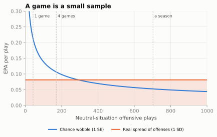
After one game, a team’s EPA per play can be off by more than twice the whole spread between average and elite offenses. After about 293 neutral plays, roughly 7 games, chance and real quality contribute equally; even a full season’s number is still noticeably blurred. The practical rules: treat one game as a story, a month as a hint, and a season as evidence; and prefer metrics that use more plays (all dropbacks rather than only third downs).
Year-over-year stability
The second test of a metric is whether it repeats. Year-over-year stability is the correlation between a team’s (or player’s) number one season and the same number the next. High stability does not prove a metric measures skill (a team’s schedule or coaching staff can carry over too), but low stability is a strong sign that the metric is mostly luck, or that it measures something that changes every year.
def yoy(df, key, col):
"""Correlation of a metric with itself one season later, same team or player."""
nxt = df.assign(season=df.season - 1)
m = df.merge(nxt, on=["season", key], suffixes=("", "_next"))
return m[col].corr(m[col + "_next"]), len(m)
# Teams (neutral situations)
p_all = plays.assign(explosive=np.where(plays.kind == "Designed run",
plays.yards_gained >= 10, plays.yards_gained >= 20))
tm = team.copy()
tm["explosive"] = (p_all.groupby(["season", "posteam"]).explosive.mean()
.reindex(pd.MultiIndex.from_frame(tm[["season", "team"]])).to_numpy())
# Fumble-recovery rate: share of ALL fumbles in a team's games that it recovered
fum = reg[(reg.fumble == 1) & reg.fumble_recovery_1_team.notna()]
fr = pd.concat([fum.assign(team=fum[side]) for side in ("posteam", "defteam")])
fr = (fr.assign(rec=fr.fumble_recovery_1_team == fr.team)
.groupby(["season", "team"]).agg(rate=("rec", "mean"), n=("rec", "size")).reset_index())
# Quarterbacks (250+ attempts) and running backs (100+ carries)
db = plays[plays.kind == "Dropback"]
qb = (db.groupby(["season", "passer_id"])
.agg(epa=("epa", "mean"), cpoe=("cpoe", "mean"), att=("pass_attempt", "sum"),
ints=("interception", "sum")).reset_index())
qb = qb[qb.att >= 250].assign(int_rate=lambda t: t.ints / t.att)
rows = [("Team", "Offense EPA/play", *yoy(tm, "team", "off_epa")),
("Team", "Offense success rate", *yoy(tm, "team", "off_sr")),
("Team", "Defense EPA/play", *yoy(tm, "team", "def_epa")),
("Team", "Defense success rate", *yoy(tm, "team", "def_sr")),
("Team", "Explosive play rate", *yoy(tm, "team", "explosive")),
("Team", "Fumble-recovery rate", *yoy(fr, "team", "rate")),
("QB", "EPA per dropback", *yoy(qb, "passer_id", "epa")),
("QB", "CPOE", *yoy(qb, "passer_id", "cpoe")),
("QB", "Interception rate", *yoy(qb, "passer_id", "int_rate")),
("RB", "Expected yards per carry", *yoy(rb, "player_gsis_id", "exp_ypc")),
("RB", "Yards per carry", *yoy(rb, "player_gsis_id", "avg_rush_yards")),
("RB", "RYOE per carry", *yoy(rb, "player_gsis_id", "rush_yards_over_expected_per_att"))]
stab = pd.DataFrame(rows, columns=["who", "metric", "r", "pairs"])s = stab.iloc[::-1].reset_index(drop=True)
colors = {"Team": style.SERIES[0], "QB": style.SERIES[2], "RB": style.SERIES[1]}
fig, ax = plt.subplots(figsize=(6.5, 4.4))
ax.barh(s.index, s.r, color=[colors[w] for w in s.who], height=0.62,
edgecolor=style.SURFACE, linewidth=2)
for i, r in s.iterrows():
ax.text(max(r.r, 0) + 0.01, i, f"{r.r:.2f}", va="center", fontsize=8, color=style.INK_2)
ax.set_yticks(s.index, [f"{w}: {m}" for w, m in zip(s.who, s.metric)], fontsize=8.5)
ax.axvline(0, color=style.BASELINE, lw=1)
ax.set_xlim(-0.05, 0.6)
ax.set_xlabel("Correlation with the same metric the next season")
ax.set_title("What repeats from one season to the next")
ax.grid(axis="y", visible=False)
from matplotlib.patches import Patch
ax.legend(handles=[Patch(color=c, label=k) for k, c in colors.items()],
loc="lower right", fontsize=8)
plt.show()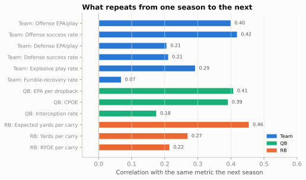
Four lessons from one chart:
- Offense is more stable than defense. An offense’s results lean heavily on one player, the quarterback, who usually returns and whose level is among the most stable things in football. A defense’s results depend more on turnovers and on which quarterbacks it happened to face. Expect defensive rankings to churn.
- Success rate repeats about as well as EPA per play, no better to speak of. Ignoring the size of each play makes it less sensitive to a few explosive plays and turnovers, but the gain in steadiness is tiny, and the earlier table showed what it costs: success rate was the weakest guide to later scoring. Use EPA per play as the main number and success rate as a check on how a team got there. Explosive play rate repeats less well than either.
- Interception rate is far less stable than overall quarterback efficiency. Interceptions are rare, and whether a defender catches a catchable ball is partly chance (more on that below).
- For running backs, what the back is given repeats better than what he adds. Expected yards per carry (the blocking and the play call) repeats best; RYOE repeats worst of the three, for the reasons given in the RYOE section. A runner’s yards per carry is mostly his offensive line and scheme, which is one reason the NFL pays running backs less than it once did (Building a Roster picks this up).
Opponent adjustment
A team that plays the four best defenses in October will look worse than it is. Opponent adjustment corrects for that. The simplest version is a back-and-forth: estimate every defense’s quality, subtract each opponent’s quality from each play an offense ran, recompute the offenses, use them to re-estimate the defenses, and repeat until the numbers settle.
s25 = neutral[neutral.season == 2025]
lg = s25.epa.mean()
off_q = s25.groupby("posteam").epa.mean() - lg # start from raw ratings
def_q = s25.groupby("defteam").epa.mean() - lg
for _ in range(25):
new_off = (s25.epa - s25.defteam.map(def_q)).groupby(s25.posteam).mean() - lg
new_def = (s25.epa - s25.posteam.map(off_q)).groupby(s25.defteam).mean() - lg
off_q, def_q = new_off, new_def
adj = pd.DataFrame({"raw_off": s25.groupby("posteam").epa.mean() - lg, "adj_off": off_q,
"raw_def": s25.groupby("defteam").epa.mean() - lg, "adj_def": def_q})
adj["change_off"] = adj.adj_off - adj.raw_off
moves = adj.reindex(adj.change_off.abs().sort_values(ascending=False).index).head(6)
top = moves.index[0]
md_table(moves.reset_index(names="team"), digits=3)| team | raw_off | adj_off | raw_def | adj_def | change_off |
|---|---|---|---|---|---|
| TEN | -0.201 | -0.140 | 0.117 | 0.123 | 0.061 |
| CLE | -0.224 | -0.276 | -0.094 | -0.080 | -0.052 |
| IND | 0.075 | 0.126 | -0.004 | -0.006 | 0.051 |
| MIA | 0.017 | -0.034 | 0.044 | 0.052 | -0.050 |
| SF | 0.072 | 0.113 | 0.102 | 0.089 | 0.041 |
| NE | 0.178 | 0.138 | 0.002 | 0.050 | -0.040 |
Every column is EPA per play relative to the 2025 league average. raw_off is the offense as measured; adj_off is the offense after subtracting the quality of the defenses it faced; raw_def and adj_def are the same for its defense (negative is good); change_off is adjusted minus raw. A positive change_off means the offense faced tougher-than-average defenses, so it was better than its raw number; a negative one means it had an easy schedule. The biggest mover in 2025, TEN, went from -0.201 raw to -0.140 adjusted: its offense was better than it looked.
In a 17-game season the adjustment is real but modest: the biggest moves are around five hundredths of a point per play, about half the spread between an average and a good offense, and the overall order barely changes. It matters most early in a season, for teams with lopsided schedules, and for defenses (which face a narrower set of quarterbacks). DVOA, QBR and most betting models include an adjustment like this one; raw nflverse EPA does not.
Turnover luck
Turnovers are the biggest plays in EPA, and a large part of them is chance. The clearest case is fumbles. Forcing fumbles is a skill and so is holding on to the ball, but who recovers a loose ball bouncing on the turf is close to a coin flip. That is turnover luck.
nxt = fr.assign(season=fr.season - 1)
pair = fr.merge(nxt, on=["season", "team"], suffixes=("", "_next"))
r_fr = pair.rate.corr(pair.rate_next)
fig, ax = plt.subplots(figsize=(5.2, 4.6))
ax.scatter(pair.rate, pair.rate_next, s=18, color=style.SERIES[0], alpha=0.7,
edgecolor=style.SURFACE, linewidth=0.6)
ax.axhline(0.5, color=style.BASELINE, lw=1)
ax.axvline(0.5, color=style.BASELINE, lw=1)
fit = np.polyfit(pair.rate, pair.rate_next, 1)
xs = np.array([0.2, 0.8])
ax.plot(xs, np.polyval(fit, xs), color=style.SERIES[1], lw=2,
label=f"Best-fit line (r = {r_fr:.2f})")
for a in (ax.xaxis, ax.yaxis):
a.set_major_formatter(plt.FuncFormatter(lambda v, _: f"{v:.0%}"))
ax.set_xlim(0.2, 0.8)
ax.set_ylim(0.2, 0.8)
ax.set_xlabel("Fumble-recovery rate, season N")
ax.set_ylabel("Fumble-recovery rate, season N+1")
ax.set_title("Falling on the ball is a coin flip")
ax.legend(loc="upper left", fontsize=8)
plt.show()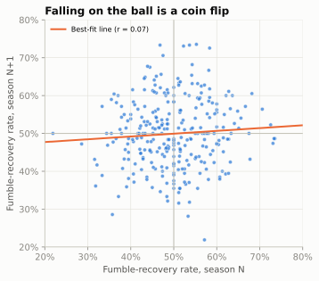
With a correlation of 0.07, last year’s recovery rate tells you essentially nothing about this year’s. A team’s turnover margin (takeaways minus giveaways) is a big driver of its record, and the part of it that comes from loose balls bouncing its way will not repeat. That is why analysts flag “turnover-luck” teams as candidates to regress to the mean: to drift back toward average next season.
Interceptions have a luck component too, though a smaller one. A defender who gets his hands on a ball sometimes drops it; a perfectly thrown ball is sometimes tipped into a linebacker’s arms. FTN’s charting marks every throw it judges interception-worthy, so for 2022 onward you can compare a quarterback’s interceptions with his interception-worthy throws.
ftn = nfl().load_ftn_charting([2025]).to_pandas()
x = (plays[(plays.season == 2025) & (plays.kind == "Dropback")]
.merge(ftn[["nflverse_game_id", "nflverse_play_id", "is_interception_worthy"]],
left_on=["game_id", "play_id"], right_on=["nflverse_game_id", "nflverse_play_id"]))
iw = (x.groupby("passer").agg(dropbacks=("epa", "size"), interceptions=("interception", "sum"),
int_worthy=("is_interception_worthy", "sum"))
.query("dropbacks >= 400").astype(int))
iw["gap"] = iw.interceptions - iw.int_worthy
risky_rank = (iw.int_worthy / iw.dropbacks).rank(ascending=False) # 1 = riskiest thrower
md_table(pd.concat([iw.sort_values("gap").head(4), iw.sort_values("gap").tail(3)])
.reset_index())| passer | dropbacks | interceptions | int_worthy | gap |
|---|---|---|---|---|
| C.Williams | 633 | 7 | 18 | -11 |
| B.Nix | 669 | 11 | 21 | -10 |
| C.Ward | 615 | 7 | 15 | -8 |
| J.Allen | 547 | 10 | 18 | -8 |
| J.Goff | 619 | 8 | 9 | -1 |
| B.Young | 536 | 11 | 11 | 0 |
| G.Smith | 519 | 17 | 14 | 3 |
Nearly every quarterback threw more interception-worthy balls than he had interceptions; defenders drop a lot of them. But the gap varies widely. A quarterback whose interceptions ran well below his interception-worthy throws in 2025 (Caleb Williams, by FTN’s charting) benefited from dropped picks and is a good bet to throw more interceptions next year on the same decisions. One at the bottom of the table, with more interceptions than interception-worthy throws (Geno Smith, with the Raiders in 2025), is the opposite case: his rate of interception-worthy throws ranked only 11 of 24 by FTN’s charting, yet the defense caught more than the charting expected. Some of that is bad luck; some may be the charting itself, which is one person’s judgement of each throw. This is the reason some analysts look at quarterback EPA with interceptions down-weighted: the decision is skill, the catch is partly chance. FTN’s labels are one charter’s judgement, so treat them as evidence, not truth.18
The broadcast metrics, placed on a map
You now have the tools to judge any football metric with three questions: what does it measure, can you rebuild it, and when does it fool you? Here is where the metrics you hear on broadcasts sit.
METRICS = [ # name, x (team -> player), y (open -> proprietary), source
("Explosive play rate", 0.07, 0.93, "Box score"),
("Success rate", 0.12, 0.76, "Play-by-play model"),
("EPA per play", 0.22, 0.86, "Play-by-play model"),
("Passer rating", 0.50, 0.95, "Box score"),
("ANY/A", 0.48, 0.80, "Box score"),
("CPOE", 0.66, 0.66, "Play-by-play model"),
("RYOE", 0.80, 0.44, "Tracking data"),
("QBR", 0.56, 0.25, "Play-by-play model"),
("DVOA", 0.18, 0.30, "Play-by-play model"),
("ESPN win rates\n(pass rush, run stop)", 0.83, 0.20, "Tracking data"),
("PFF grades", 0.88, 0.06, "Human charting"),
]
SRC = {"Box score": (style.SERIES[3], "s"), "Play-by-play model": (style.SERIES[0], "o"),
"Tracking data": (style.SERIES[2], "D"), "Human charting": (style.SERIES[1], "^")}
fig, ax = plt.subplots(figsize=(6.5, 4.8))
ax.axhspan(0.55, 1.02, color=style.SERIES[0], alpha=0.06, lw=0)
ax.axhspan(0, 0.55, color=style.SERIES[1], alpha=0.06, lw=0)
ax.axhline(0.55, color=style.BASELINE, lw=1, ls=(0, (4, 3)))
for name, x, y, src in METRICS:
c, mk = SRC[src]
ax.scatter(x, y, s=70, color=c, marker=mk, edgecolor=style.SURFACE, linewidth=1.2, zorder=3)
ax.text(x + 0.025, y, name, fontsize=8, color=style.INK, va="center", ha="left")
ax.set_xlim(0, 1.12)
ax.set_ylim(0, 1.02)
ax.set_xticks([0.05, 0.5, 0.95], ["whole offense", "quarterback", "one player's\nown share"])
ax.set_yticks([0.27, 0.78], ["closed:\nnumbers only", "open:\nrebuildable"])
ax.tick_params(axis="y", length=0)
ax.set_xlabel("What it credits")
ax.set_title("A map of football metrics")
ax.grid(False)
ax.legend(handles=[plt.Line2D([], [], ls="", marker=mk, color=c, markersize=8, label=k)
for k, (c, mk) in SRC.items()],
loc="upper center", bbox_to_anchor=(0.5, -0.17), ncol=4, fontsize=8)
plt.show()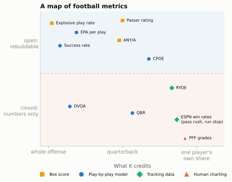
The map is a simplification (QBR is built on expected points, DVOA on success-style values, PFF grades on human judgement), but it captures the two questions that matter most when someone quotes a number at you: whose performance does it try to measure, and can anyone check it?
Passer rating
Passer rating is the oldest number on the map and still the one on the scoreboard graphic. The NFL adopted it in 1973, from a committee headed by Don Smith of the Pro Football Hall of Fame with Seymour Siwoff of the Elias Sports Bureau and Don Weiss of the league office.19 The problem they faced was that the league crowned its passing leader by ranking passers against each other in several categories and adding up the ranks, and the categories kept changing, so a rating depended on who else threw that year and could not be compared across seasons. Their answer was to put four rates on fixed scales, each anchored so that an average passer of 1960-1970 scored 1.0 per part, and cap each part so that no single stat could run away with the total. The formula is short enough to write in code:
def passer_rating(cmp, att, yds, td, ints):
clip = lambda v: np.clip(v, 0, 2.375) # each part is capped at 0 and 2.375
a = clip((cmp / att - 0.3) * 5) # completion percentage
b = clip((yds / att - 3) * 0.25) # yards per attempt
c = clip(td / att * 20) # touchdown rate
d = clip(2.375 - ints / att * 25) # interception rate
return (a + b + c + d) / 6 * 100 # perfect = 158.3
def any_a(yds, td, ints, sack_yds, att, sacks):
"""Adjusted net yards per attempt (sack_yds as a positive number of yards lost)."""
return (yds + 20 * td - 45 * ints - sack_yds) / (att + sacks)
att_rows = plays[(plays.pass_attempt == 1) & (plays.sack == 0)]
lg = att_rows.groupby("season").agg(cmp=("complete_pass", "sum"), att=("pass_attempt", "sum"),
yds=("passing_yards", "sum"), td=("pass_touchdown", "sum"),
ints=("interception", "sum"))
league_rating = passer_rating(lg.cmp, lg.att, lg.yds, lg.td, lg.ints)
print("League passer rating:", league_rating.round(1).to_dict())League passer rating: {2016: 89.6, 2017: 87.2, 2018: 93.3, 2019: 90.7, 2020: 94.0, 2021: 91.1, 2022: 89.4, 2023: 89.3, 2024: 92.7, 2025: 91.8}The odd numbers come from simple arithmetic. An average passer scores 1.0 on each of the four parts, 4.0 in all; the formula divides by 6 and multiplies by 100, so an average passer of that era rates 4 / 6 × 100 = 66.7. Each part is capped at 2.375, so the most any passer can reach is 4 × 2.375 / 6 × 100 = 158.3, the “perfect” rating.
The real virtue of passer rating is that it is open: anyone can compute it from a box score, and it does correlate with EPA. The design was sensible in 1973, and its limits are now easy to see:
- The scale has drifted. It was built so that an average passer would rate about 66.7. The league as a whole now rates around 92, because completion rates rose and interception rates fell. A rating of 90 was elite in the 1970s and is roughly average now.
- It ignores sacks, scrambles and runs, so it cannot see a quarterback who takes drive-killing sacks or one who adds value with his legs.
- It ignores situation. A 6-yard completion on third-and-10 helps a passer rating; it does not help the team.
ANY/A
ANY/A, adjusted net yards per attempt, fixes the worst gaps with a box-score formula: count sacks as attempts and their lost yards as negative yards, add a bonus for touchdowns and a penalty for interceptions. Its weights trace to The Hidden Game of Football, and the version used today (20 yards per touchdown, 45 per interception) is the one Pro Football Reference publishes.20 Those weights are rough exchange rates between yards and points, the same idea as EPA without the situation. At The Hidden Game’s 0.08 points per yard, 45 yards is about 3.6 points, close to the three and a half to four points this chapter measured for a typical interception; 20 yards is about 1.6 points, roughly the gap between a touchdown’s 7 and a first-and-goal close to the goal line. ANY/A is the best box-score quarterback stat and tracks EPA per dropback closely. Distrust it in the same places you distrust yards: it does not know the down, the distance or the score.
qbbox = (att_rows.groupby(["season", "passer_id", "passer"])
.agg(cmp=("complete_pass", "sum"), att=("pass_attempt", "sum"),
yds=("passing_yards", "sum"), td=("pass_touchdown", "sum"),
ints=("interception", "sum")).reset_index())
sk = (db[db.sack == 1].groupby(["season", "passer_id"])
.agg(sacks=("sack", "sum"), sack_yds=("yards_gained", lambda s: -s.sum())))
qbm = (qbbox.merge(sk.reset_index(), on=["season", "passer_id"], how="left").fillna(0)
.merge(qb[["season", "passer_id", "epa", "cpoe"]], on=["season", "passer_id"]))
qbm["rating"] = passer_rating(qbm.cmp, qbm.att, qbm.yds, qbm.td, qbm.ints)
qbm["any_a"] = any_a(qbm.yds, qbm.td, qbm.ints, qbm.sack_yds, qbm.att, qbm.sacks)
corr = qbm[["epa", "any_a", "rating", "cpoe"]].corr()["epa"]
print("Correlation with EPA per dropback (QB seasons, 250+ attempts, 2016-2025):",
corr.drop("epa").round(2).to_dict())
q25 = qbm[qbm.season == 2025].copy()
q25["rating_rank"] = q25.rating.rank(ascending=False).astype(int)
q25["epa_rank"] = q25.epa.rank(ascending=False).astype(int)
gap = q25.assign(g=q25.rating_rank - q25.epa_rank).sort_values("g")
hi_rating, hi_epa = gap.iloc[0], gap.iloc[-1] # rated better than EPA; EPA better than rating
md_table(q25.sort_values("epa", ascending=False)
[["passer", "att", "rating", "any_a", "cpoe", "epa", "rating_rank", "epa_rank"]].head(10))Correlation with EPA per dropback (QB seasons, 250+ attempts, 2016-2025): {'any_a': 0.93, 'rating': 0.87, 'cpoe': 0.7}| passer | att | rating | any_a | cpoe | epa | rating_rank | epa_rank |
|---|---|---|---|---|---|---|---|
| D.Maye | 492 | 113.48 | 8.26 | 10.78 | 0.32 | 1 | 1 |
| J.Love | 438 | 101.41 | 7.41 | 5.53 | 0.26 | 6 | 2 |
| M.Stafford | 594 | 109.74 | 8.29 | 1.54 | 0.22 | 2 | 3 |
| B.Purdy | 284 | 100.48 | 7.00 | 7.23 | 0.21 | 9 | 4 |
| J.Goff | 576 | 105.84 | 7.53 | 1.78 | 0.18 | 3 | 5 |
| J.Allen | 459 | 102.37 | 6.85 | 3.51 | 0.17 | 5 | 6 |
| D.Prescott | 597 | 100.02 | 7.16 | 2.20 | 0.17 | 10 | 7 |
| P.Mahomes | 500 | 89.98 | 6.25 | 0.34 | 0.17 | 23 | 8 |
| D.Jones | 382 | 100.70 | 7.33 | 2.30 | 0.16 | 7 | 9 |
| M.Jones | 286 | 98.40 | 6.73 | 3.68 | 0.13 | 13 | 10 |
Among quarterback seasons since 2016, ANY/A tracks EPA per dropback most closely, then passer rating, then CPOE, which is the most different by design (it measures accuracy, not results). The disagreements are the useful part. Among the 33 qualifying 2025 quarterbacks, the one whose passer rating flattered him most was L.Jackson (rating rank 4, EPA rank 19); the one the rating undersold most was P.Mahomes (rating rank 23, EPA rank 8). A quarterback with a high rating but middling EPA per dropback is usually taking sacks, or completing passes that fall short of the sticks; one with high EPA but a modest rating is often adding value the rating cannot see, with his legs or on third down.
QBR
QBR (ESPN’s Total QBR) was introduced by ESPN in 2011 to do what passer rating could not: credit everything a quarterback does, in context.21 It is built on expected points, divides credit for each play between the quarterback and his teammates (a screen that a receiver turns into a long touchdown is not all the quarterback’s), includes runs, sacks and penalties, adjusts for the defenses faced, and uses win probability to give less credit for plays when the game is already out of reach, so a throw in a blowout counts for less than the same throw in a close game. (The first version also gave extra credit for “clutch” plays; ESPN dropped that.) It runs from 0 to 100, with 50 about average.
QBR is closer to EPA than any other broadcast number, and its ideas are sound. The trouble is that it is proprietary: the credit-division model and the weights are ESPN’s, so you cannot reproduce it or check why a game graded the way it did. Use it as a well-built opinion; distrust it on single games, where the win-probability weighting can make the same performance grade very differently.
DVOA
DVOA, Defense-adjusted Value Over Average, was created by Aaron Schatz at Football Outsiders in the early 2000s and has been published by FTN since August 2023, when Schatz moved there and Football Outsiders shut down.22 Like EPA, it scores every play against what an average team would do in the same situation; unlike nflverse EPA, it starts from success-style values rather than expected points, and it adjusts for opponents. Results are percentages: +20% on offense means 20% better than average; on defense, negative is good. DVOA’s strengths are its long history and its opponent adjustment. Its weakness is that the exact baselines and adjustments are not public, so it cannot be rebuilt, and early in a season FTN also publishes DAVE, a version that blends DVOA with the preseason projection, so check which one is being quoted.
PFF grades
PFF grades come from Pro Football Focus, founded in England in 2004 by Neil Hornsby.23 PFF’s analysts watch every player on every snap and grade each one, roughly from −2 to +2 in half-point steps, for how well he did his job regardless of the play’s result; the season’s grades are then scaled to 0-100. That is the opposite of EPA’s design. EPA measures outcomes and divides credit poorly; grades measure individual process and can credit a guard who won his block on a play that lost yards.
Their weakness is the mirror image: grades are human judgements, made without knowing each player’s exact assignment, and the scale-up from play grades to a season grade is proprietary. Different good analysts would grade some plays differently. Use grades for positions that have no box-score stats (offensive line, coverage), and treat a one-game grade as one opinion.
ESPN’s win rates
ESPN Analytics publishes four win rates built from NFL Next Gen Stats tracking data: the pass rates were introduced in 2018 and the run rates in 2020, both designed by Brian Burke.24 Pass rush win rate (taught in The Pass Rush) asks whether a rusher beats his block within 2.5 seconds; pass block win rate asks the reverse (did the blocker hold his man for 2.5 seconds). Run stop win rate (RSWR) does the same for run defense: a defender “wins” if he defeats his block to fill his gap, penetrates the line, or forces the runner to bounce, or if he makes a tackle within 3 yards of the line of scrimmage even while blocked; run block win rate is the blocker’s side of the same contest. The tracking data makes the measurement objective, and the fixed 2.5-second clock takes the quarterback out of the pass-rush number: a quarterback who holds the ball for five seconds would otherwise hand every rusher a “win,” and one who throws in two would hide a rusher who was about to get home.
The caveats: the exact rules for a run-stop “win” are ESPN’s, the metrics are published as leaderboards rather than play-level data, and a win is not a result (a defender can win his block and still be out of position). They are best for comparing linemen with each other, the place where box-score stats like sacks and tackles are weakest.
Explosive play rate
Last, the simplest, defined earlier in this chapter: open, easy to compute, a poor predictor, and always worth checking for which cut-offs a source used.
ImportantWhy it exists
Every metric on the map exists because the one before it missed something. Passer rating replaced a confusing set of rankings; ANY/A added sacks and touchdowns; EPA added situation; QBR and DVOA added opponents and credit-sharing; win rates and grades went after the players who never touch the ball. Each fix costs something: usually openness, sometimes objectivity. The trade is always the same: the more a metric tries to isolate one player in context, the more modelling or judgement it needs, and the harder it is to check.
TipWatch for it
EPA in your head. You do not need a laptop to keep an expected-points ledger. Memorise these anchors for first-and-10 (nflverse’s EP, the curve in the first chart):
| First-and-10 at | Own 10 | Own 25 | Midfield | Opp 20 | Goal at the 1 |
|---|---|---|---|---|---|
| Expected points | 0.1 | 1.1 | 2.6 | 4.5 | 6.3 |
Then, on each snap:
- Before the snap, find the anchor nearest the ball and adjust: add about 0.06 per yard toward the opponent’s goal; subtract about 0.7 for second down, about 1.7 in all for third down and about 3.1 for fourth down; then subtract about 0.07 for each yard of distance beyond 10 (or add it back for each yard under 10).
- After the play, estimate the new situation the same way. If the ball changed hands, flip the sign of the new offense’s EP. If it scored, use the points.
- Subtract. Was it positive (a success) or negative? Was it big (more than about +1.5 or below −1.5)? Most plays land between −1 and +1; turnovers and touchdowns are the outliers.
- Notice the “empty yards”: completions short of the sticks on third down, and long gains as the half’s clock runs out (when “no score” becomes the likeliest outcome), both of which EPA scores near zero or below.
- When a broadcast quotes a stat, place it on the map: whose performance, open or proprietary, and is the sample big enough to mean anything?
Afterwards, check your guesses with the model: load the game’s play-by-play, sort by EPA, and see how your mental ledger compares. Add one line per play you tracked to your prediction log: quarter and clock, the situation, your EP before and after, the model’s EPA, and whether you had the sign right (Film Study and Charting scores it).
Predict the play
The pictures use the course’s position letters: on offense X, Z and H are wide receivers, Y and U tight ends, F the fullback and T the tailback; on defense E is an end, T a tackle, N a nose tackle, S, M and W the strong-side, middle and weak-side linebackers, C a cornerback, $ the nickel back, D the dime back, and FS and SS the safeties.
from gridiron import Play, offense, defense, routes as r
def situation_diagram(off, dfn, los, to_go, title, lateral="auto", width_in=5.2, setup=None):
"""A pre-snap picture with the line to gain in yellow; `setup(p)` can add routes and notes."""
p = Play(off, dfn, los=los, to_go=to_go, title=title)
if setup:
setup(p)
p.draw(lateral=lateral, width_in=width_in)
plt.show()
TipPredict the play
Third-and-9 at your own 30, second quarter, tie game. The offense comes out in an empty backfield with five receivers spread across the field; the defense answers with six defensive backs and two deep safeties. The quarterback completes a quick out to the left slot (H) for 7 yards, and the defender over him tackles him short of the line to gain. Before reading on: what is EP before the snap, roughly what is the EPA of that completion, and is it a success? Why would the defense want this throw?
def empty_setup(p):
p.route("H", r.quick_out(8.5, 4)) # H starts 1.5 yds off the line: catch at +7
p.dropback(1.0)
p.pass_to("H", t=1.6)
p.drop("DB", (7.0, -12.0))
p.highlight("H", "DB")
p.note("caught at +7", at=(3.5, -14.5))
off = offense("gun_empty")
dime = [q.moved(w=2.5) if q.key == "MIKE" else q for q in defense("dime", "two_high", off)]
situation_diagram(off, dime, los=40, to_go=9, title="3rd & 9, own 30",
lateral=(-19, 19), width_in=6.2, setup=empty_setup)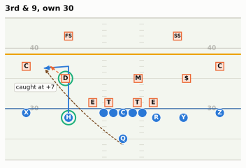
TipAnswer
before = neutral[(neutral.down == 3) & neutral.ydstogo.between(8, 10)
& neutral.yardline_100.between(65, 75)]
short = before[before.yards_gained.between(6, 8) & (before.yards_gained < before.ydstogo)]
print(f"Model EP, 3rd & 9 at own 30: {my_ep(3, 9, 70)[0]:+.2f}; "
f"after, 4th & 2 at own 37: {my_ep(4, 2, 63)[0]:+.2f}")
print(f"Real plays: EP before (3rd & 8-10, own 25-35) {before.ep.mean():+.2f}; "
f"EPA of 6-8 yard gains short of the sticks {short.epa.mean():+.2f} ({len(short):,} plays, "
f"{(short.epa > 0).mean():.0%} positive)")Model EP, 3rd & 9 at own 30: -0.17; after, 4th & 2 at own 37: -0.50
Real plays: EP before (3rd & 8-10, own 25-35) +0.06; EPA of 6-8 yard gains short of the sticks -0.44 (191 plays, 4% positive)The situation is worth about zero before the snap (a little below on this chapter’s model, a little above on the real plays in that bucket): third-and-9 is converted well under half the time, and the likely result is a punt. The 7-yard out leaves fourth-and-2 at the 37, a situation where most teams still punt, so the play’s EPA is negative and it is not a success, even though it “gained 7.” (Many fourth-down models now rate going for it there as close to a toss-up; that is a win-probability question, and Win Probability and Decision Analysis takes it up. The EP model prices the punt that teams have usually chosen.) The handful of short gains with positive EPA are oddities, such as a defensive penalty tacked on after the catch.
The two-deep, six-DB shell is one sensible answer: it keeps everything in front and rallies to tackle short of the sticks, which is exactly what happened in the picture. It is the conservative choice. Against an empty backfield, defenses also like to bring a five-man pressure or play Cover 1 man, because the quarterback has no back to help protect; which one a team prefers is a tendency you can chart (Tendencies: PROE, Personnel, Motion, and Coverage). This is the most common “empty yards” play on any broadcast.
TipPredict the play
Second-and-1 at midfield, first quarter. The offense brings in two tight ends and a fullback and lines up under center in an I-formation; the defense answers with a base 4-3 front and rolls its strong safety down beside the tight end, eight men in the box. Which is the offense more likely to call? Is that the “wrong” call by EPA, and is the gap between running and passing here as large as on first-and-10?
def short_setup(p):
p.highlight("SS")
p.note("8th man", at=(8.5, 6.0))
off = offense("i_form_22")
base = [q.moved(d=5.0, w=-9.0) if q.key == "LCB" else q
for q in defense("4-3_over", "single_high", off)]
situation_diagram(off, base, los=60, to_go=1, title="2nd & 1, midfield",
lateral=(-17, 17), setup=short_setup)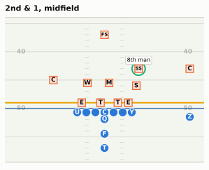
TipAnswer
s21 = neutral[(neutral.down == 2) & (neutral.ydstogo == 1)]
display(md_table(s21.groupby("kind").agg(plays=("epa", "size"), epa=("epa", "mean"),
success=("success", "mean")).reset_index()))
t31 = neutral[(neutral.down == 3) & (neutral.ydstogo == 1) & neutral.season.between(2021, 2025)]
print(f"Third-and-1 converted {t31.first_down.mean():.0%} of the time (2021-2025, neutral)")
fpa = ftn_sn[["nflverse_game_id", "nflverse_play_id", "is_play_action"]]
pa = (neutral[(neutral.kind == "Dropback") & neutral.season.between(2022, 2025)]
.merge(fpa, left_on=["game_id", "play_id"],
right_on=["nflverse_game_id", "nflverse_play_id"]))
pa_21 = pa.loc[(pa.down == 2) & (pa.ydstogo == 1), "is_play_action"].mean()
print(f"Play-action on 2nd-and-1 dropbacks, 2022-2025: {pa_21:.0%} "
f"(all dropbacks {pa.is_play_action.mean():.0%})")| kind | plays | epa | success |
|---|---|---|---|
| Designed run | 3,215 | -0.01 | 0.50 |
| Dropback | 904 | 0.05 | 0.55 |
Third-and-1 converted 70% of the time (2021-2025, neutral)
Play-action on 2nd-and-1 dropbacks, 2022-2025: 44% (all dropbacks 27%)Run is the likely call: teams run on roughly three out of four second-and-1 snaps, and heavy personnel makes it likelier still. Is it the wrong call? The table says dropbacks earn a little more, but apply this chapter’s own lesson before you believe it. Passes on second-and-1 are a selected group, often called because the defense has loaded the box, as in the picture above: in FTN’s charting (2022-2025) about 44% of them used play-action, against 27% of all dropbacks. Their edge is the edge of a counter-punch thrown at the right moment, not proof that passing should be the default, and it is a small fraction of the two-tenths of a point dropbacks earn on first-and-10.
Notice also how hard success is here: second-and-1 is already a good situation, so a run that merely moves the chains barely raises EP, and about half of all runs end with negative EPA. That is why coaches call this a “free” down: even if a shot downfield falls incomplete, third-and-1 still converts about 70% of the time. So the prediction is “run,” and the moment to watch for is the play-action shot that the run makes possible (Constraint Theory and Sequencing).
TipPredict the play
First-and-goal at the 1. The offense is in a jumbo goal-line set; the defense has everyone within a couple of yards of the line. Three possible outcomes: (a) a 1-yard touchdown run, (b) the back is stuffed for no gain, (c) the back fumbles and the defense recovers in the end zone for a touchback. Rank them by EPA, and guess how large each is.
off = [q.moved(label="H") if q.key == "W" else q for q in offense("goal_line")]
goal_d = []
for q in defense("46", "zero", off):
if q.pos == "CB":
q = q.moved(d=2.0, w=np.sign(q.w) * 8.5)
elif q.key == "MIKE": # second level: 1-2 yards deep in the
q = q.moved(d=2.3) # end zone, ready to fill downhill
elif q.key == "SS":
q = q.moved(d=2.3, w=-3.5)
elif q.key == "FS":
q = q.moved(d=3.0, w=0.0)
goal_d.append(q)
situation_diagram(off, goal_d, los=109, to_go=1,
title="1st & goal at the 1", lateral=(-11, 11), width_in=6.0)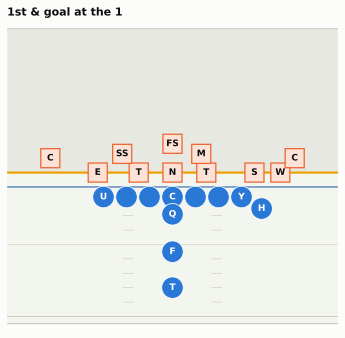
TipAnswer
ep_goal = my_ep(1, 1, 1)[0]
ep_2nd = my_ep(2, 1, 1)[0]
ep_opp_tb = my_ep(1, 10, 80)[0] # opponent's ball on their own 20 after the touchback
print(f"EP before: {ep_goal:+.2f}")
print(f"(a) TD: EPA = 7 - {ep_goal:.2f} = {7 - ep_goal:+.2f}")
print(f"(b) stuffed: EPA = {ep_2nd:.2f} - {ep_goal:.2f} = {ep_2nd - ep_goal:+.2f}")
print(f"(c) fumble: EPA = -{ep_opp_tb:.2f} - {ep_goal:.2f} = {-ep_opp_tb - ep_goal:+.2f}")EP before: +6.42
(a) TD: EPA = 7 - 6.42 = +0.58
(b) stuffed: EPA = 5.91 - 6.42 = -0.51
(c) fumble: EPA = -0.79 - 6.42 = -7.21The touchdown earns surprisingly little, because first-and-goal at the 1 already “owns” most of a touchdown. The stuff costs about as much as the touchdown gains: second-and-goal at the 1 is still an excellent situation. The fumble is a disaster of a different order: the offense throws away more than six expected points and hands the opponent the ball at their 20, a swing of about seven. (The ball goes to the 20 because a touchback after a turnover is still spotted there; only kickoff touchbacks moved to the 30 and then the 35.) It is the clearest example of why ball security on the goal line matters more than an extra half-yard of push, and why one goal-line fumble can erase a short-yardage back’s whole season of EPA.
Takeaways
- Expected points is a probability model for the next score: seven possible outcomes, each with a probability that depends on down, distance, field position and the clock. You can fit a decent one in thirty lines of NumPy; nflverse’s model adds time, timeouts, venue and era. It values situations for an average team, which is what lets EPA measure the difference.
- EPA is EP after minus EP before, with scores counted as points and changes of possession flipped. In your head: about 0.06 a yard, a growing cost for each lost down, and a little for each yard of distance. It beats yards because it prices context, sacks and turnovers in one unit, though its predictive edge over simpler stats is smaller than its descriptive one, and it ignores the score.
- Run-versus-pass averages are riddled with selection effects. Hold the situation fixed and dropbacks still out-earn runs on early downs and third-and-long, while in short yardage the gap closes and runs succeed more often, partly thanks to the quarterback sneak.
- Respect the noise. A play’s EPA varies by about 1.4 points; a game is a small sample; several games pass before signal matches noise. Offense repeats better than defense, success rate about as well as EPA, and fumble recovery not at all. Adjust for opponents when schedules are lopsided.
- For players, separate what they were given from what they added: CPOE for quarterbacks’ accuracy, RYOE for runners, and a skeptical eye on interceptions, which carry real luck.
- Place every broadcast metric on the map: what it credits, whether it is open, and how much modelling or judgement sits inside it. Passer rating and ANY/A are open but blind to context; QBR, DVOA, PFF grades and ESPN win rates add context or isolate players at the cost of being proprietary.
Connections
Builds on: the EPA primer in Downs, Distance, and Field Position and the data skills in Working with nflverse Data in Python. CPOE is introduced in Quarterback Play, pass rush win rate in The Pass Rush.
Sets up:
- Win Probability and Decision Analysis: the score-aware cousin of EP, and the fourth-down and two-point decisions built on both.
- Tendencies: PROE, Personnel, Motion, and Coverage: expected pass rate, the same “over expected” idea applied to play-calling.
- Tracking Data and the Big Data Bowl: the tracking frames behind RYOE and the win rates.
- Building a Roster: positional value, and why stability numbers like these shape what teams pay for.
- Appendix G, the Metrics and Data Atlas, gives each metric in this chapter a one-card summary.
If you want to go deeper: Ben Baldwin’s write-up of the nflfastR expected-points, win-probability and completion-probability models on Open Source Football;25 Yurko, Ventura and Horowitz’s nflWAR paper;26 The Hidden Game of Football by Carroll, Palmer and Thorn for the history; and the public method notes from FTN (DVOA), ESPN (QBR and win rates) and PFF (grading) before trusting any of their numbers.
Super Bowl LX, February 8, 2026, Levi’s Stadium: Seattle 29, New England 13. Play-level details (Darnold to Kupp on third-and-12; the Nwosu interception return; Derick Hall’s strip-sack) are from the nflverse play-by-play for game
2025_22_SEA_NE. Summary: https://en.wikipedia.org/wiki/Super_Bowl_LX. Seattle’s 2025 staff (HC Mike Macdonald, DC Aden Durde) per the course fact sheet and https://en.wikipedia.org/wiki/2025_Seattle_Seahawks_season.↩︎nflfastR, “A beginner’s guide to nflfastR” (filters on
rush == 1 | pass == 1; EPA is computed on penalty plays; excludeplay_type == "no_play"to match official stats): https://nflfastr.com/articles/beginners_guide.html.↩︎nflverse play-by-play, participation, Next Gen Stats and FTN charting data, loaded with nflreadpy (https://github.com/nflverse/nflreadpy) and cached in
data/cache/. Seasons 2016-2025, regular season; data retrieved October 2026. nflverse revises past seasons occasionally, so re-running the code can move the last decimal place.↩︎NFL, “NFL owners vote to make dynamic kickoff permanent, adjust ball spot on touchbacks to 35-yard line” (2025): https://www.nfl.com/news/nfl-owners-vote-to-make-dynamic-kickoff-permanent-adjust-ball-spot-on-touchbacks-to-35-yard-line.↩︎
Ben Baldwin, “nflfastR EP, WP, and CP models,” Open Source Football, 2020 (feature list, XGBoost, and the drive-distance and score-differential weights): https://www.opensourcefootball.com/posts/2020-09-28-nflfastr-ep-wp-and-cp-models/; nflfastR documentation: https://www.nflfastr.com/.↩︎
Ronald Yurko, Samuel Ventura and Maksim Horowitz, “nflWAR: A reproducible method for offensive player evaluation in football,” Journal of Quantitative Analysis in Sports 15, no. 3 (2019): 163-183, https://doi.org/10.1515/jqas-2018-0010; preprint https://arxiv.org/abs/1802.00998.↩︎
Virgil Carter and Robert E. Machol, “Technical Note: Operations Research on Football,” Operations Research 19, no. 2 (1971): 541-544, https://doi.org/10.1287/opre.19.2.541 (8,373 plays from the first 56 games of 1969). On Carter’s master’s degree, the PR-office data and Bill Walsh: ESPN, “Ex-Bengals QB Virgil Carter’s legacy of EPA,” https://www.espn.com/nfl/story/_/id/40276150/nfl-epa-analytics-virgil-carter-cincinnati-bengals; https://en.wikipedia.org/wiki/Virgil_Carter.↩︎
Bob Carroll, Pete Palmer and John Thorn, The Hidden Game of Football (New York: Warner Books, 1988). The straight-line values (−2 at your own goal line to +6 at the opponent’s) as summarised in cfbfastR, “College Football Expected Points Model Fundamentals, Part III”: https://cfbfastr.sportsdataverse.org/articles/college-football-expected-points-model-fundamentals-part-iii.html.↩︎
ESPN Front Row, “Former Navy pilot Brian Burke joins ESPN as senior analytics specialist,” June 2015: https://www.espnfrontrow.com/2015/06/former-navy-pilot-brian-burke-joins-espn-as-senior-analytics-specialist/; ESPN Press Room bio (F/A-18 carrier pilot; founded Advanced NFL Stats in 2007): https://espnpressroom.com/us/bios/brian-burke/.↩︎
Aaron Schatz, “Football Outsiders stats explainer,” ESPN.com, October 25, 2007 (success rate at 40/60/100%; defensive “stops” at 45/60/100%): https://www.espn.com.au/nfl/news/story?id=3079031. The thresholds’ origin in The Hidden Game of Football: Steelers Depot, “Looking at the Steelers’ success/failure play rates by down” (2012), https://steelersdepot.com/2012/10/looking-at-the-steelers-success-failure-play-rates-by-down.↩︎
NBC Sports Bay Area, “Of the Raiders and explosive plays” (October 2012; Dennis Allen: 16+ yards passing, 12+ rushing, “That’s the way we look at it here”): https://www.nbcsportsbayarea.com/nfl/of-the-raiders-and-explosive-plays/1325433/; David Helman, “Scott Linehan looking to get greedy for more explosive plays,” DallasCowboys.com, September 16, 2016 (runs of 12+ and passes of 16+): https://dallascowboys.com/news/scott-linehan-looking-to-get-greedy-for-more-explosive-plays-413426.↩︎
Analysts’ cut-offs compared (and a 10-yard run / 25-yard pass alternative proposed) in Sam Hoppen, “How should we define an explosive play?”: https://samhoppen.substack.com/p/how-should-we-define-an-explosive.↩︎
Ben Baldwin, guest column on play-action and the running game, Football Outsiders, February 2018 (play-by-play charting, 2011-2017); Josh Hermsmeyer, “Can NFL Coaches Overuse Play-Action? They Haven’t Yet,” FiveThirtyEight, 2018 (linebackers bite on the fake regardless of how often it is run). Summary of both: https://en.wikipedia.org/wiki/Play-action_pass.↩︎
Super Bowl LX, February 8, 2026, Levi’s Stadium: Seattle 29, New England 13. Play-level details (Darnold to Kupp on third-and-12; the Nwosu interception return; Derick Hall’s strip-sack) are from the nflverse play-by-play for game
2025_22_SEA_NE. Summary: https://en.wikipedia.org/wiki/Super_Bowl_LX. Seattle’s 2025 staff (HC Mike Macdonald, DC Aden Durde) per the course fact sheet and https://en.wikipedia.org/wiki/2025_Seattle_Seahawks_season.↩︎NFL.com (Next Gen Stats), “The coverage that turned the Seahawks into Super Bowl winners and is taking the NFL by storm”: https://www.nfl.com/news/the-coverage-that-turned-the-seahawks-into-super-bowl-winners-and-is-taking-the-nfl-by-storm. Seattle’s and the game’s coverage shares are this chapter’s calculation from nflverse participation data (coverage labels charted by FTN for 2023 on); six sacks per the course fact sheet and the game’s play-by-play.↩︎
2024 Ravens rushing figures from nflverse play-by-play (this chapter’s code); season context at Pro Football Reference: https://www.pro-football-reference.com/teams/rav/2024.htm.↩︎
NFL Next Gen Stats Analytics, “Next Gen Stats: Intro to Expected Rushing Yards” (2020): https://www.nfl.com/news/next-gen-stats-intro-to-expected-rushing-yards; NFL Football Operations, “2020 Big Data Bowl results”: https://operations.nfl.com/updates/the-game/2020-big-data-bowl-results.↩︎
FTN charting data (2022+) via nflverse, field
is_interception_worthy; licence CC-BY-SA 4.0. Dictionary: https://nflreadr.nflverse.com/articles/dictionary_ftn_charting.html.↩︎Pro Football Hall of Fame, “NFL’s Passer Rating” (committee of Don Smith, Seymour Siwoff and Don Weiss; standards from all qualified passers since 1960; adopted 1973): https://www.profootballhof.com/news/nfl-s-passer-rating/; Pete Palmer, “Palmer Method,” The Coffin Corner 7, no. 1 (1985), on the pre-1973 ranking systems: https://profootballresearchers.com/archives/Website_Files/Coffin_Corner/07-01-214.pdf.↩︎
Pro Football Reference glossary, “Adjusted Net Yards per Pass Attempt” (PFR notes it now uses 20 yards per touchdown rather than the book’s 10): https://www.pro-football-reference.com/about/glossary.htm; Carroll, Palmer and Thorn (1988).↩︎
ESPN, “How is Total QBR calculated? We explain our quarterback rating,” September 8, 2016: https://www.espn.com/blog/statsinfo/post/_/id/123701/how-is-total-qbr-calculated-we-explain-our-quarterback-rating. Opponent adjustment: https://en.wikipedia.org/wiki/Total_quarterback_rating.↩︎
FTN, “DVOA explainer”: https://ftnfantasy.com/nfl/dvoa-explainer; on Football Outsiders’ closure (September 2023) and Schatz joining FTN (August 2023): https://en.wikipedia.org/wiki/Football_Outsiders.↩︎
Pro Football Focus, “PFF grades: how they work” (−2 to +2 in 0.5 increments, converted to 0-100): https://www.pff.com/grades; founding (2004, Neil Hornsby, UK): https://en.wikipedia.org/wiki/Pro_Football_Focus.↩︎
Brian Burke, “We created better pass-rusher and pass-blocker stats: How they work,” ESPN, October 5, 2018: https://www.espn.com/nfl/story/_/id/24892208/creating-better-nfl-pass-blocking-pass-rushing-stats-analytics-explainer-faq-how-work; Brian Burke, “Introducing new NFL run-blocking and run-stopping stats,” ESPN, September 8, 2020: https://www.espn.com/nfl/story/_/id/29813062/introducing-new-nfl-run-blocking-run-stopping-stats-how-run-block-win-rate-run-stop-win-rate-work.↩︎
Ben Baldwin, “nflfastR EP, WP, and CP models,” Open Source Football, 2020 (feature list, XGBoost, and the drive-distance and score-differential weights): https://www.opensourcefootball.com/posts/2020-09-28-nflfastr-ep-wp-and-cp-models/; nflfastR documentation: https://www.nflfastr.com/.↩︎
Ronald Yurko, Samuel Ventura and Maksim Horowitz, “nflWAR: A reproducible method for offensive player evaluation in football,” Journal of Quantitative Analysis in Sports 15, no. 3 (2019): 163-183, https://doi.org/10.1515/jqas-2018-0010; preprint https://arxiv.org/abs/1802.00998.↩︎